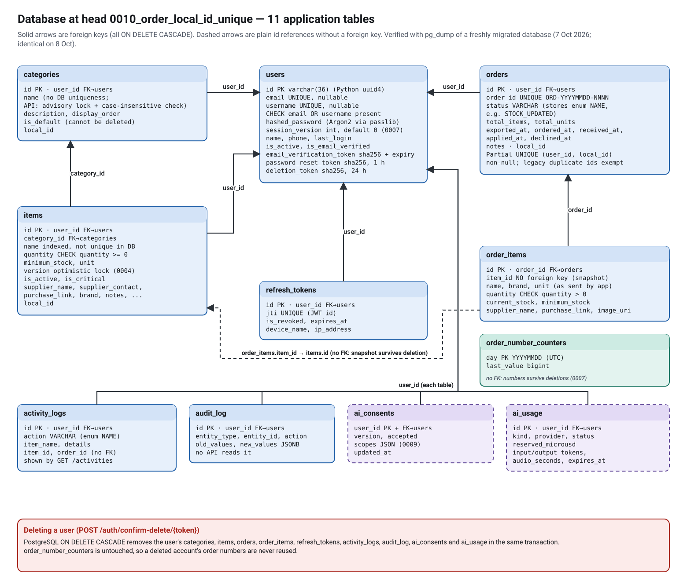
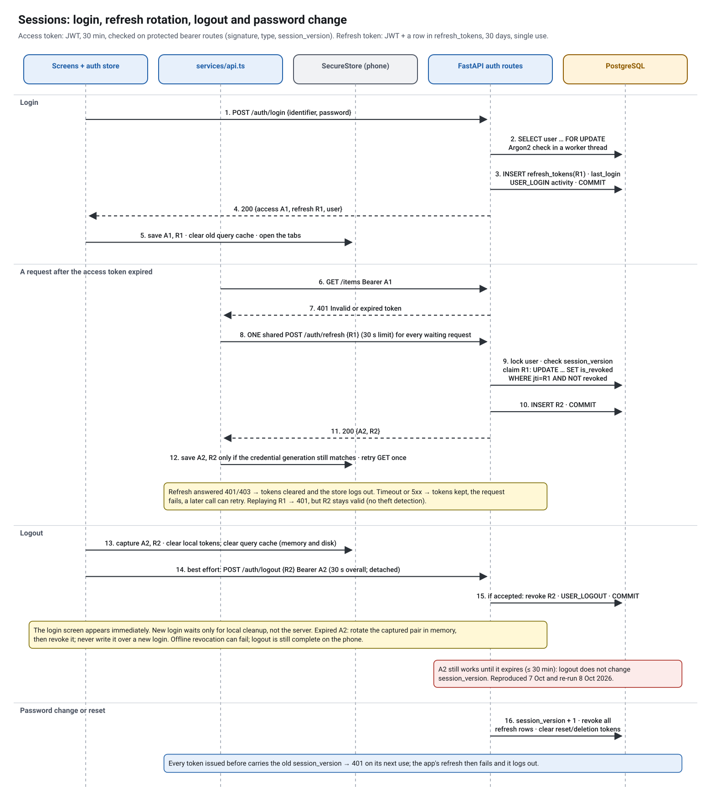
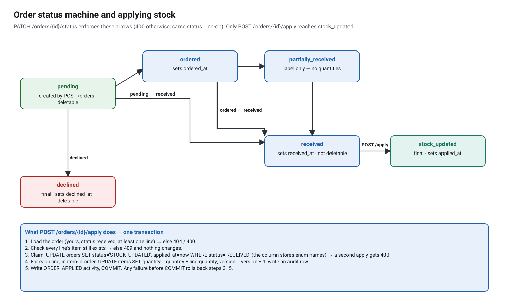
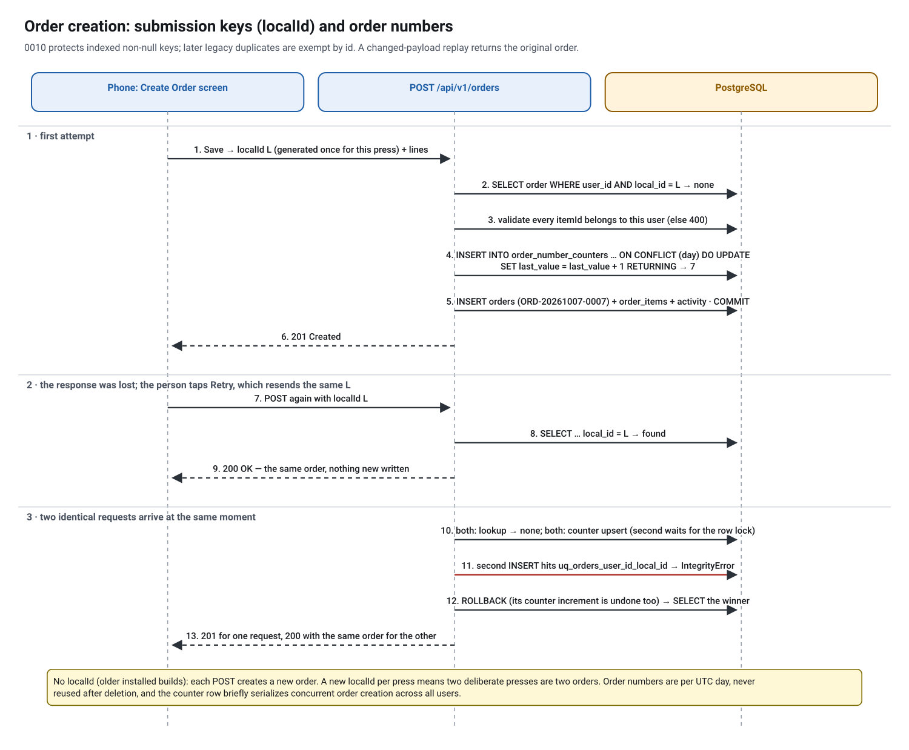
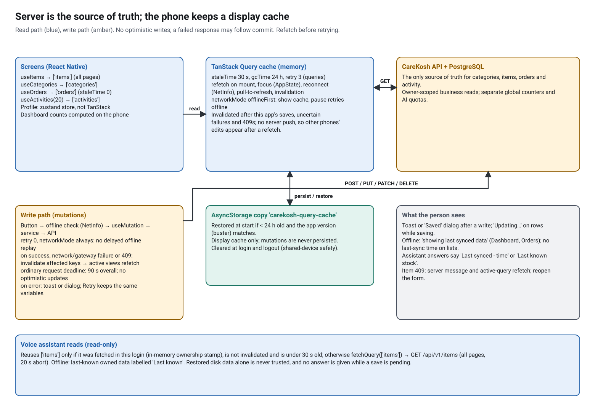
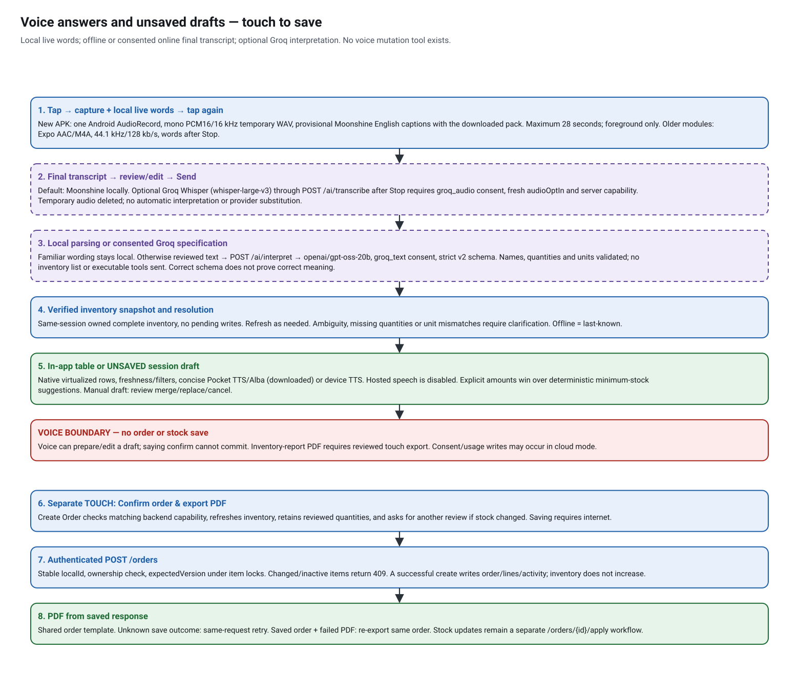
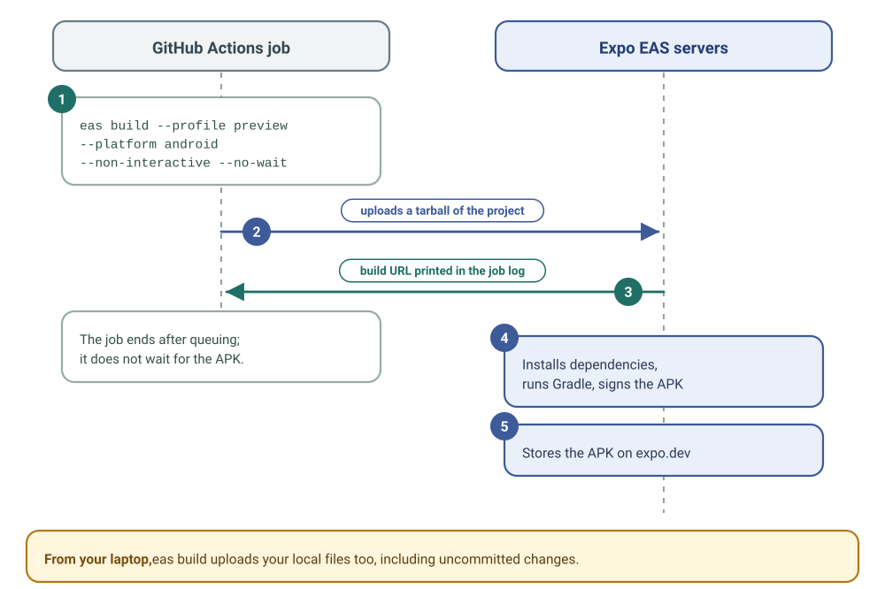
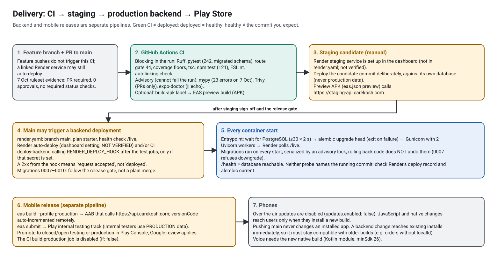
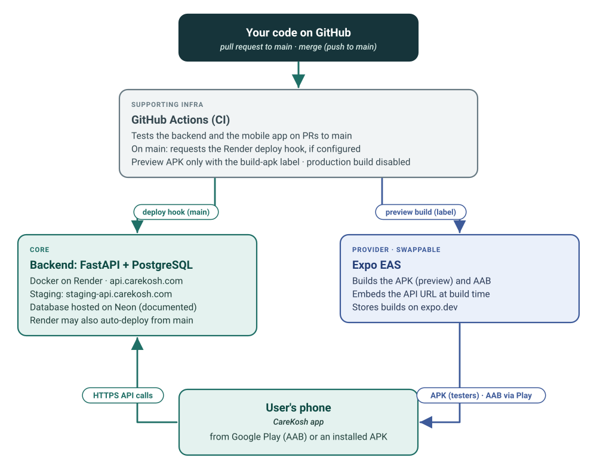

CareKosh: Complete Developer Guide
AI voice source update — 9 October 2026: Current AI voice architecture, checked against the 9 October 2026 working tree at
0946eb7plus local UI/capture changes: Android AudioRecord → Moonshine provisional live words → offline Moonshine or separately opted-in Groq Whisper final transcript → review/edit and Send → local parser or consented Groq GPT-OSS v2 specification → validated real inventory answers/local unsaved drafts. Device TTS and PDF rendering are local. Only touch confirmation saves an order; voice cannot change stock. Groq text and audio permissions are separate; hosted speech/Sarvam are not selected. Earlier dated test/release claims retain their original scope. This source review does not certify live deployment, account billing, all phones or recognition accuracy. Complete stack, request flow, consent, costs and code map.8 October 2026 safety follow-up: targeted code fixes are local, tested changes after the earlier audit. Deployment and real-device acceptance remain separate. Current changes and remaining scope.
Status (re-checked 8 October 2026). This is the main entry point for new developers. It was rewritten on 7 Oct 2026 from the source at branch
feature/backend-hardening-ai-voice-agent-foundation, commit03cfebb(pushed, not merged; localmainis835fad3), and every section was re-checked on 8 Oct 2026 against the working tree (03cfebbplus uncommitted documentation and two import-only mobile edits). Re-run on 8 October 2026 against a disposable local PostgreSQL 16 database: 242 backend tests passed, the API route gate (44/api/v1routes; 47 operations in total) passed, the 89-step API walkthrough matched, and 121 mobile tests passed (the same counts as on 7 Oct). Live Render, Neon, GitHub, Play Console and phone behaviour were not observed. Older numbers in other documents (39 routes, 152 tests, 8 mobile tests, migration head 0007) are historical.
- Every endpoint traced to code and tables: API traceability
- All guides and reading orders: documentation home
- What this audit checked, changed and could not verify: audit summary (local review reference; not published)
- A browser-friendly copy of this page is generated as
CAREKOSH_COMPLETE_DEVELOPER_GUIDE.htmlbydocs/tools/build_docs.py. Edit this Markdown file, not the HTML.
Which guide wins? This guide, NEW_DEVELOPER_QUICKSTART.md (30-minute setup) and the concise repo-root CAREKOSH_DEVELOPER_GUIDE.md should agree. Where any guide disagrees with the source files it cites (ci.yml, eas.json, render.yaml, the code), the source is authoritative; please fix the guide.
Evidence labels used in this guide
| Label | Meaning |
|---|---|
| VERIFIED IN CURRENT CODE | Read in the source at 03cfebb. |
| VERIFIED BY REPRODUCED TEST | Run in a disposable local environment on 7 Oct 2026; the suites, the API walkthrough and the schema dump were re-run on 8 Oct 2026. |
| HISTORICAL EVIDENCE | Recorded in a dated document; not re-run. |
| PLANNED / RECOMMENDED | Not implemented. |
| NOT VERIFIED | A live or device state this review could not observe. |
Contents#
- Part A — The product and the system
- Part B — Run it and follow one complete workflow
- Part C — How it works, one layer at a time
- Part D — Backend concepts through this codebase
- Part E — Testing, debugging and daily work
- Part F — Environments, CI/CD, deployment and release
- Part G — Learning path, reference and history
Part A — The product and the system#
A1. What CareKosh does#
CareKosh (formerly VitalTrack; renamed in PR #10/#11) helps a family or caregiver keep a home ICU stocked: suction catheters, gloves, dressings, oxygen accessories, medicines and equipment. The person records what they have, sees what is running low, prepares a purchase order, marks it received, and adds the received quantities to stock. A read-only voice and typed assistant answers questions such as "How many nitrile gloves are left?".
- Users: initially hundreds to a few thousand accounts; the planning target is about 10,000 accounts. Estimates of 100–1,000 simultaneously active users are aspirations, not measured capacity (nothing in the repository load-tests that). Several people may share one account on different phones, which is why concurrency rules matter.
- Priorities: data preservation, correctness and security first; understandable code and manageable operations next; new infrastructure only when a measured need appears.
- Shape: one Android app (React Native + Expo), one FastAPI service, one PostgreSQL database. The repository and folder names still say
vitaltrack.
A2. Domain vocabulary#
| Term | Meaning in CareKosh | Where it lives |
|---|---|---|
| Account / user | A login (email required at registration; optional username). Owns all other data. | users |
| Category | A group of items ("Respiratory", "Wound care"). Names are unique per user by API rule, not by a database constraint. | categories |
| Default category | A category with is_default = true; the API refuses to delete it. The app never creates such rows itself. |
categories.is_default |
| Item | One stocked thing: quantity, unit, minimum stock, critical flag, supplier, purchase link, notes. | items |
| Minimum stock | The re-order threshold for an item. | items.minimum_stock |
| Out of stock | Quantity ≤ 0. | rule in code |
| Low stock (server) | 0 < quantity < minimum stock (/items/stats, lowStockOnly filter). |
app/api/v1/items.py |
| Low stock (phone) | Broader: also critical equipment with exactly 1 left, and any item with minimum ≥ 1 and exactly 1 left. The dashboard and the voice assistant use this rule. | vitaltrack-mobile/types/index.ts:129-152 |
| Critical item / critical equipment | isCritical flag; on the phone, also items whose name matches critical-equipment keywords. |
items.is_critical; types/index.ts:90-103 |
| Version | A counter on each item, increased by every write. Writers must send the version they read (optimistic concurrency). | items.version |
| Order | A purchase list with a status workflow. Creating an order never changes stock. | orders, order_items |
| Order line snapshot | The item name, unit, stock and supplier as sent by the app when the order was created. History survives item edits and deletion. | order_items |
| Order number | Public id ORD-YYYYMMDD-NNNN (UTC day), from one per-day counter shared by all accounts; never reused. |
order_number_counters |
| Apply to stock | Adds a received order's line quantities to the items, once, in one transaction. | POST /orders/{id}/apply |
localId (orders) |
A submission key the app generates per Save; repeating it returns the same order instead of creating a duplicate (even if the repeated request's lines differ). | orders.local_id + unique index |
| Activity log | The user-visible history feed. Selected writes add a row, and some action names are reused (a category create is stored as ITEM_CREATE; category and order deletes as ITEM_DELETE). |
activity_logs |
| Audit log | Partial before/after snapshots for item writes, category deletes (one row per item), applied order lines and order deletes; none for order creation or status changes. No API reads it. | audit_log |
| Session generation | users.session_version; a password change or reset increments it and invalidates every older token. |
users.session_version |
| Consent scope | Per-account permission for one kind of cloud processing (groq_text for understanding, optional separate groq_audio for online listening). |
ai_consents.scopes |
| Intent | The assistant's structured understanding of a question (for example read_item, low_stock). Never contains stock facts. |
app/schemas/ai.py |
A3. Business rules the code enforces#
These are invariants. Changing any of them is a product decision, not a refactor.
- Stock never goes negative. Database
CHECK (quantity >= 0)plus API validation (0–999,999 on writes). - Order lines have a positive quantity (
CHECK (quantity > 0)); an order has 1–1,000 lines. - Stock changes only by an explicit write: editing the item (with its version) or applying a received order. Creating, receiving, declining or deleting an order never changes stock.
- An order is applied at most once, and only from
received. Applying adds the full ordered quantity of every line, even afterpartially_received. - Only
pendinganddeclinedorders can be deleted. Received and applied orders are history. - Order numbers are unique and never reused, even after an order or account is deleted.
- Every read and write is scoped to the signed-in user. Another user's id behaves as "not found".
- Concurrent edits use the version their values came from: the Edit Item form now captures its version together with its fields; server CAS rejects a stale save with 409. The person reloads/reopens before editing again.
- Names are unique per user (case-insensitive) for categories and items, enforced by the API with an advisory lock. Existing duplicates in old data are kept, not merged.
- Voice cannot commit inventory/order changes. It may prepare/edit an unsaved local order draft; separate touch confirmation on Create Order saves it. AI routes write only consent/usage metadata (plus an ordinary API client's possible token refresh).
- Deleting an account deletes all of its data (two-step email confirmation), except the global order-number counters.
- A password change or reset signs out every session; logout signs out only the device that logged out (and its access token remains valid until it expires).
A4. The system at a glance#
![System context: an Android phone running the CareKosh app (screens, TanStack cache, SecureStore, inventory assistant with local drafts, Moonshine live/final recognition, Android text-to-speech and separately consented Groq interpretation/transcription) talks over HTTPS with bearer tokens to one FastAPI service on Render (Gunicorn with two Uvicorn workers per instance, 47 routes), which owns the PostgreSQL database (documented host: Neon; CI and local development use PostgreSQL 16). Groq, Brevo and Sentry are optional outbound services used only when configured. There is no queue, no Redis, no core background job queue and no offline write queue.](diagrams/system-context.svg)
Classify every component before you reason about it:
| Component | Classification | Notes |
|---|---|---|
| Android app (React Native 0.81, Expo SDK 54) | Core | Screens, API client, query cache, assistant UI. |
| FastAPI service (Python 3.12) | Core | One codebase, one process image; 47 HTTP operations. |
| PostgreSQL (16 in CI and local Docker) | Core | The only source of truth. The hosted server version is NOT VERIFIED. |
Docker image + docker-entrypoint.sh |
Supporting infrastructure | Migrates, then starts Gunicorn. |
| GitHub + GitHub Actions | Supporting infrastructure | Code, CI, optional deploy hook. |
| Render (web service) | Current provider (swappable) | vitaltrack-backend/render.yaml describes the production service (whether Render applies it is NOT VERIFIED); staging is not in the file and is set up in the dashboard. |
| Neon (managed PostgreSQL) | Current provider (swappable) | Documented host; live projects NOT VERIFIED. |
| Expo EAS (Build, Submit) | Current provider (swappable) | APK/AAB builds and Play upload. |
| Google Play | Distribution channel | Internal testing → production. |
| Moonshine speech model (on device) | Current provider (swappable) | Downloaded once per phone; English only. |
| Android Text-to-speech | Current provider (device) | Uses an installed offline English voice. |
| Groq (interpretation / optional recognition) | Conditional | GPT-OSS reviewed text after Send; separately opted-in Whisper finished audio after Stop. Each needs its own consent scope and server capability. Hosted speech is off. |
| Brevo (email API) | Conditional | Only if MAIL_PASSWORD is set. |
| Sentry | Conditional | Only if SENTRY_DSN is set. |
| Render deploy hook in CI | Conditional | Only if the RENDER_DEPLOY_HOOK secret exists. |
voice-service/ (Alba/Piper, Kokoro workers) |
Code only | Not referenced by render.yaml or CI; its README says it is not deployed (NOT VERIFIED). |
What CareKosh does not have (so do not design as if it did): no message queue, no Redis or other cache server, no background worker service (only FastAPI BackgroundTasks for sending email after a response), no WebSockets or push updates, no offline write queue on the phone, no admin API (the SuperUser dependency exists but no route uses it), no server-side PDF generation (PDFs are made on the phone).
A5. Repository map#
vitaltrack/ repository root (legacy name; product is CareKosh)
├── vitaltrack-backend/ FastAPI service
│ ├── app/main.py app factory: middleware, exception handlers, /health, /live, /
│ ├── app/core/ config.py (settings), database.py (engine, get_db), security.py (JWT, hashing), logging.py (redaction)
│ ├── app/api/deps.py get_current_user and other dependencies
│ ├── app/api/v1/ routers: auth, categories, items, orders, activity, ai
│ ├── app/models/ SQLAlchemy models (11 tables)
│ ├── app/schemas/ Pydantic request/response models
│ ├── app/services/ ai_guard, ai_provider, ai_body_limit, audit, inventory_lock
│ ├── app/utils/ email (Brevo HTTP API), rate_limiter (slowapi)
│ ├── alembic/versions/ migrations 0001 → 0010
│ ├── tests/ pytest suite (242 tests; destroys and rebuilds its test database)
│ ├── scripts/ route gate, coverage gate, smoke checks, restore drill
│ ├── Dockerfile, Dockerfile.dev, docker-entrypoint.sh, render.yaml, docker-compose*.yml
├── vitaltrack-mobile/ Expo app
│ ├── app/ screens (expo-router): (auth)/, (tabs)/, item/[id], order/create, builder, profile, search, assistant
│ ├── services/ api.ts (HTTP client, token refresh), auth, items, categories, orders, assistant
│ ├── hooks/ useServerData (queries), useServerMutations (writes), useSeedInventory, useForceSync
│ ├── providers/QueryProvider.tsx TanStack Query config and persistence
│ ├── store/ zustand stores (auth session, UI, result dialogs)
│ ├── features/assistant/ local parser, snapshot rules, recording control, policy flags
│ ├── components/assistant/ AssistantExperience (dock + overlay), VoiceSetup
│ ├── modules/carekosh-voice/ Kotlin Expo module: Moonshine transcription, Android TTS
│ ├── tests/ Node test runner suites (121 tests)
│ ├── app.json, app.config.js, eas.json
├── voice-service/ optional speech workers (not deployed)
├── docs/ guides, audits, diagrams, tools
├── future_plan/ proposals and drafts (not current behaviour)
└── .github/workflows/ci.yml the only CI workflow
Files to read first (in this order): vitaltrack-backend/app/main.py, app/api/deps.py, app/core/database.py, app/api/v1/items.py, app/api/v1/orders.py, vitaltrack-mobile/services/api.ts, providers/QueryProvider.tsx, hooks/useServerMutations.ts, app/item/[id].tsx, components/assistant/AssistantExperience.tsx.
Part B — Run it and follow one complete workflow#
B1. Prerequisites#
Follow NEW_DEVELOPER_QUICKSTART.md for the 30-minute path. In short you need Docker Desktop, Node.js 22 (vitaltrack-mobile/.nvmrc; CI's frontend job still uses Node 20), Git, Python 3.12 (only to run the backend tests outside Docker), and either Expo Go for SDK 54 (fast UI work) or an EAS-built preview APK (needed for anything native, including the microphone and on-device speech). The development profile cannot be used yet: it needs expo-dev-client, which is not installed.
| You want to… | Use | Why |
|---|---|---|
| Change screens, styles, API calls | Expo Go (SDK 54) + local Docker backend | Fastest loop; no native build. |
| Test the voice assistant's microphone | An EAS-built preview APK |
The Kotlin module carekosh-voice cannot load in Expo Go. A preview APK talks to staging, not your laptop. Typed questions still work in Expo Go. |
| Test against staging | A preview APK (calls https://staging-api.carekosh.com) |
The API URL is baked in at build time. |
B2. Local configuration#
Backend (vitaltrack-backend/app/core/config.py, read from environment variables, then a .env file in the working directory):
| Variable | Local value (Docker dev) | Notes |
|---|---|---|
ENVIRONMENT |
development |
development/testing do not force database TLS (asyncpg's default prefer applies); any other value requires verified TLS. development also creates missing tables at start-up. production adds HSTS and requires FRONTEND_URL. |
DATABASE_URL |
postgresql+asyncpg://postgres:postgres@db:5432/vitaltrack |
Any ?query is stripped; postgres:// is rewritten to the asyncpg driver. |
SECRET_KEY |
a ≥ 32-character string | The public default is refused outside development/testing. |
DEBUG |
true |
Enables /docs, /redoc, /openapi.json. Off in production. |
CORS_ORIGINS |
["*"] or a list |
Browsers only; the Android app is not affected by CORS. |
REQUIRE_EMAIL_VERIFICATION |
true in docker-compose.dev.yml |
Enforced only if MAIL_PASSWORD is also set. |
MAIL_PASSWORD, MAIL_FROM |
empty; noreply@carekosh.com |
MAIL_PASSWORD is the Brevo API key; empty disables email (and verification enforcement). |
FRONTEND_URL |
http://localhost:8000/api/v1/auth |
Base of links in emails (they point at backend HTML pages). |
AI_*, GROQ_* |
off/empty | Optional assistant cloud features; see C7. |
The two Compose files differ: docker-compose.dev.yml builds Dockerfile.dev (Uvicorn --reload, your app/ and alembic/ mounted, explicit CORS list, verification flag on); docker-compose.yml runs the production image target with ENVIRONMENT=development and wildcard CORS. Both start PostgreSQL 16 and run alembic upgrade head before the server. If that migration fails, the production image exits, but Dockerfile.dev starts the server anyway (A-17), so read the log. setup-local-dev.sh creates .env files only if they do not exist (it never overwrites).
Where values come from. Inside the app, a real environment variable beats .env, which beats the code default. In Compose, values written under environment: win. docker-compose.yml also passes every other key in vitaltrack-backend/.env into the container (for example MAIL_PASSWORD, GROQ_API_KEY); docker-compose.dev.yml only fills its ${…} placeholders from your shell or that .env.
Local safety. Both files publish PostgreSQL (user and password postgres) on port 5432, and pgAdmin (password admin, only when started with its profile) on port 5050, on every network interface of your laptop, so other devices on the same Wi-Fi can reach them. Use a trusted network. The files share ports 8000, 5432 and 5050, so run one at a time (and stop any local PostgreSQL on 5432). docker compose down keeps the database volume; docker compose down -v deletes it and all local data.
Mobile: EXPO_PUBLIC_API_URL in vitaltrack-mobile/.env (for example http://192.168.1.20:8000 for a phone on the same Wi-Fi, http://10.0.2.2:8000 for the Android emulator, or http://localhost:8000 on a USB phone with adb reverse tcp:8000 tcp:8000). If it is unset, the app falls back to http://localhost:8000. Reload the app after changing it (or restart Metro with --clear). EXPO_PUBLIC_* values are compiled into the JavaScript bundle and are public; never put secrets there.
B3. A complete first workflow (setup → login → inventory → order → voice → tests → deployment)#
Do this once, slowly, with the backend logs open (docker compose -f docker-compose.dev.yml logs -f api, run from vitaltrack-backend/ like every Compose command here). Each step names what happens in the code and the database, so you can follow it; the traceability matrix has the exact path.
- Start everything. Backend via Docker (Quickstart steps 1–3). Check
http://localhost:8000/health→"status":"healthy"and"database":"connected", andhttp://localhost:8000/live→"database":"not_checked"./healthtouches the database;/livenever does. - Register in the app (Quickstart step 5). Server:
POST /api/v1/auth/registerhashes the password with Argon2 in a worker thread and writesusers,refresh_tokensand an activity row. The app deliberately discards the returned tokens (without revoking them, A-9) and shows the verify-email screen; with email unconfigured locally, verification is not enforced. - Log in.
POST /api/v1/auth/loginreturns a 30-minute access token and a 30-day refresh token, saved in SecureStore. The app clears any previous query cache, then loads the dashboard:GET /api/v1/items?page=…&pageSize=100(all pages),GET /api/v1/orders?…,GET /api/v1/activities?limit=20, andGET /api/v1/ai/capabilitiesfor the assistant dock. Dashboard counts are computed on the phone. - Build inventory. Dashboard → "Build Inventory" opens the Builder → "+ Add New Category" (
POST /categories); then Inventory tab → "+" → new item (POST /items, quantity 40, minimum 50). Open the item again, change the quantity, Save:PUT /items/{id}withversion: 1; the response hasversion: 2, and an activity row and an audit row exist.- Try the conflict with the API: send PUT with an old version and expect 409 Version conflict. On two devices, open an edit form, save elsewhere and refetch the first device without closing its form. Its old form must still send its original version and be refused; reopen it for the current values. This is also covered by a component regression test; repeat on a real phone.
- Create an order. Orders → "+" → pick lines → "Confirm order & export PDF". The app sends one
localIdfor this Save; on a fresh database the server allocatesORD-<UTC date>-0001(one counter per UTC day, shared by all accounts), stores line snapshots and writes no stock. The PDF is produced on the phone. - Receive and apply. Expand the order card: "Have you received the order?" (
PATCH /orders/{id}/status→received), then "Update Stock" (POST /orders/{id}/apply). Watch the item's quantity and version increase in one transaction. Then send the apply request again (for example withcurl): the second call gets 400 and stock is added once. - Ask a question. Open Profile menu → Voice setup, turn the assistant on, choose "Try a typed question here" ("Practice a command here" once voice is ready), and type "Show low stock" (typed questions work in Expo Go too). The phone matches the sentence locally, reads
['items'](or refetches), and builds the answer on the phone. No/ai/interpretcall is made for familiar wording (the assistant still callsGET /ai/capabilitieswhen it opens). For the microphone path you need a preview APK (which talks to staging) and the downloaded speech pack (see C7). - Run the tests (E1):
npm testinvitaltrack-mobile/, and the backend suite against a disposable database whose name containstest. - Understand how this would ship (Part F): a PR runs CI; a staging candidate is deployed deliberately; merging to
maincan deploy the production backend (the CI deploy hook if its secret is set, and Render auto-deploy if enabled — treat every merge as a production deploy); the Android app ships separately through EAS and Play, and installed apps never change until users install the new build.
Exercise: after each step, find the handler in vitaltrack-backend/app/api/v1/ and the rows in the database (docker compose -f docker-compose.dev.yml exec db psql -U postgres -d vitaltrack -c "select action, item_name from activity_logs order by created_at desc limit 5"). Note that action is stored in upper case (ITEM_UPDATE), while the API shows item_update.
Part C — How it works, one layer at a time#
C1. The life of one request#
![Sequence for PATCH /api/v1/items/{id}/stock, an API-only endpoint (the app saves stock with PUT): an API client sends the quantity and the version it read; middleware buffers the body, adds security headers and a request id; FastAPI parses the JSON, runs get_db and get_current_user (one user SELECT), then validates the fields; the handler runs a compare-and-swap UPDATE, writes activity and audit rows and commits; db.refresh re-reads the row in a new transaction; the response is serialised with camelCase names; then get_db commits that read and closes the session before the 200 is sent (FastAPI 0.115.6).](diagrams/request-lifecycle.svg)
What it means. FastAPI is an ASGI application: Uvicorn workers (managed by Gunicorn in production) receive HTTP connections and call the app as an async function with a scope, a receive channel and a send channel. Middleware are wrappers around that function; each sees the request on the way in and the response on the way out.
The order in this codebase (verified in app/main.py; Starlette inserts each new middleware at the front, so the last one added is the outermost):
- Starlette
ServerErrorMiddleware(always outermost; runs the generic 500 handler). AIBodyLimit(app/services/ai_body_limit.py) reads the whole body before anything else: ≤ 2 MB for normal routes, ≤ 12 KB for AI JSON, ≤ 900 KB for/ai/transcribe; AI routes without a bearer header get 401 before the body is read; AI uploads must finish in 10 s (408).add_security_headers(nosniff, frame deny, referrer policy,Cache-Control: no-store, HSTS in production).add_request_id(echoX-Request-IDor create one; it is not written into logs).CORSMiddleware.- Starlette
ExceptionMiddleware(validation,IntegrityError, rate-limit andHTTPExceptionhandlers), then the router.
Then, inside FastAPI 0.115.6 (read in the framework source; the SQL counts in steps 1–3 were reproduced on 8 Oct 2026):
- Body parsing. If the route takes a JSON body, it is parsed first. Malformed JSON → 422
json_invalidbefore any dependency runs: no token check, no SQL. - Dependencies (
Depends) run in order.get_dbcreates oneAsyncSession(pool: 5 connections plus 10 overflow per worker; no SQL yet).get_current_userchecks the bearer token (a bad token → 401 with no SQL), then loads the user with oneSELECT. - Validation. Path, query and body fields are validated. A failure → 422, after the user
SELECThas already run; the handler never runs. - Handler. It executes SQL through the session. On the five rate-limited auth routes the limit is checked here, after validation. Every write handler calls
await db.commit()itself; any SQL after that (usuallydb.refresh(...)) starts a new transaction. - Response. The return value is validated against
response_modeland serialised with field aliases (camelCase). - Clean-up.
get_db(a dependency withyield) commits whatever is still open, rolls back if an exception is propagating, and closes the session. A 422 leaves it normally. Then the response is sent;BackgroundTasks(emails) run after that.
So there is one session per request, not one transaction per request. A rollback undoes only work that was not yet committed. If the response is lost after a commit, the change is saved but the client cannot tell: an uncertain outcome, so re-read before retrying.
Version note (FastAPI 0.115.6; official release notes re-checked on 8 Oct 2026). In the installed version, the code after
yieldinget_dbruns after the response object is built but before it is sent, so a failed final commit still becomes an error response. FastAPI 0.118.0 moved that exit code to after the response is sent; 0.121.0 addedscope="request"for dependencies that must exit before sending. Before upgrading FastAPI, keep every write handler committing explicitly (all current ones do) so the client never sees success for a write that was not committed. See SOURCES (local review reference; not published) row 1 and finding A-23.
How to follow any request in code: route path → vitaltrack-backend/app/api/v1/<router>.py (search for the path string) → request schema in app/schemas/ → dependencies in app/api/deps.py → SQL statements in the handler → models in app/models/ → the mobile caller in vitaltrack-mobile/services/<name>.ts → the hook in hooks/useServerMutations.ts or useServerData.ts → the screen. The traceability matrix does this for all 47 operations.
![Three failure paths: invalid fields are rejected with 422 before the handler runs (with a valid token the user SELECT has already run); another user's id returns 404 because ownership is part of the query; an order apply that finds a deleted item raises 409 before writing anything, and get_db rolls back. A failure after the order is claimed is rolled back the same way, so no partial stock change is kept. Unexpected exceptions become a generic 500 without SQL details; reproduced on 7 Oct and re-run on 8 Oct 2026, those 500s lack the request id and security headers.](diagrams/request-rollback.svg)
Error shapes you will see: 422 {"error":"Validation Error","message":"Request validation failed","details":[…],"timestamp":…}; HTTPException → {"detail": "…"}; item version conflict 409 {"error":"Version conflict","message":…,"server_version":…,"server_quantity":…}; unhandled database constraint 409 {"detail":"A conflict occurred. Please try again.","timestamp":…}; rate limit 429 {"error":"Rate limit exceeded: 5 per 1 minute"} (no detail); anything else 500 {"detail":"An unexpected error occurred. Please try again.","timestamp":…}.
C2. The data model#

- 12 tables in a migrated database = 11 application tables +
alembic_version(verified withpg_dumpof a fresh database migrated to0010_order_local_id_uniqueon 7 Oct 2026; identical schema on 8 Oct 2026). - Primary keys are 36-character UUID strings generated in Python (
VARCHAR(36)), not PostgreSQL'suuidtype. Two tables use natural keys:order_number_counters.dayandai_consents.user_id. - Ownership is a
user_idcolumn on every user-owned table, always filtered in queries. - Cascades: every foreign key is
ON DELETE CASCADE. Deleting a user removes all of that user's rows in one statement; deleting a category removes its items; deleting an order removes its lines. - Deliberately missing foreign keys:
order_items.item_id,activity_logs.item_id/order_idandaudit_log.entity_idare plain strings, so history survives deletion.order_number_countershas no user link, so numbers are never reused. - Constraints vs application rules (see D9):
CHECK (quantity >= 0)on items,CHECK (quantity > 0)on order lines,CHECK (email IS NOT NULL OR username IS NOT NULL)on users, unique email/username/order number/refreshjti, and a partial unique index on(user_id, local_id) WHERE local_id IS NOT NULLfor orders. Category and item names are not unique in the database; the API serialises its duplicate checks withpg_advisory_xact_lock. - Enums are stored as text:
orders.statusandactivity_logs.actionhold the Python enum names (STOCK_UPDATED,ITEM_CREATE), while the API sends lower-case values (stock_updated). Raw SQL must use the upper-case names. - Relationship loading: the ORM declares most collections
lazy="selectin"(load children with one extra query). Hot paths addnoload(...)so that, for example, authenticating a request does not load every item and order of the user. In async SQLAlchemy, accidental lazy loading raises an error instead of silently querying, so any collection you touch must be loaded explicitly. - Migrations: Alembic chain
0001_initial→ … →0007_session_order_safety→0008_ai_consent_usage→0009_ai_provider_scopes→0010_order_local_id_unique(head). 0007–0010 exist only on the feature branch. See F5.
C3. Authentication and authorization#

Authentication answers "who is calling?"; authorization answers "may they touch this row?". CareKosh authenticates with JWT bearer tokens and authorizes by ownership (every query includes user_id = current_user.id). There are no roles in use.
| Flow | What happens (verified in code; reproduced 7 Oct and re-run 8 Oct 2026) |
|---|---|
| Register | Email required (use example.com addresses in tests: .test/.local domains are rejected); username optional but must already be lower case ([a-z0-9_], 3–50; upper case → 422); password 8–128 with upper, lower and digit; Argon2 hash computed in a worker thread; tokens returned (the app discards them and asks the person to verify and log in). |
| Login | Identifier with @ → email, otherwise username (case-insensitive). Row lock on the user. Same 401 message for unknown user and wrong password. |
| Every protected request | Decode token → must be an access token → load user → session_version must match → active → email-verification policy. |
| Refresh | One refresh token = one use. A conditional UPDATE … WHERE is_revoked = false decides the single winner, even for simultaneous requests. A replayed token gets 401 but does not revoke the newer token (no theft detection). Each refresh issues a fresh 30-day token, so sessions slide with no absolute limit. |
| Logout | Revokes the refresh token in the body. The access token stays valid until it expires (≤ 30 min). |
| Password change / reset | session_version + 1, all refresh tokens revoked, pending reset and deletion links cleared: every device must log in again (old access tokens get 401 "User not found"). Reset links last 1 hour and are single-use. A reset sends a "password changed" email; a change sends none. |
| Email verification | Enforced only when REQUIRE_EMAIL_VERIFICATION=true and email is configured (MAIL_PASSWORD not blank; the key itself is not checked). Then login, refresh and every bearer request of an unverified account return 403 EMAIL_NOT_VERIFIED, so such a user cannot even log out or request deletion. Registration still returns 201. Links last 24 hours and are single-use. |
| Account deletion | DELETE /auth/me emails a 24-hour link → GET shows a confirmation page (deletes nothing) → POST deletes the user and, by cascade, all their data. |
Secrets at rest: passwords are Argon2 hashes (passlib, bcrypt accepted for old hashes); verification, reset and deletion tokens are stored as SHA-256 digests, so a database leak does not reveal usable links. Refresh tokens are stored by jti (the token id), not as raw tokens.
Rate limits: register 3/hour, login 5/minute, forgot-password and resend-verification 3/hour, reset-password 5/hour. Rate limiting is best effort: five auth routes, counters in memory per worker process, reset on restart; an open finding about how clients are identified is tracked privately. Do not describe these limits as a complete brute-force defence.
On the phone (services/api.ts, store/useAuthStore.ts): tokens live in SecureStore (vitaltrack_access_token, vitaltrack_refresh_token); the signed-in user is persisted as vitaltrack-auth. A 401 triggers one shared refresh (30 s timeout) and one retry; a 401/403 from refresh clears the tokens and logs out; a network failure keeps them. At start-up the app calls GET /auth/me with an 8-second race; if the server is slow it enters "Connecting… server warming up" mode instead of logging out. Login and logout both clear the query cache in memory and on disk, so the next person on a shared phone cannot see the previous account's data.
C4. Inventory rules and concurrency#
![Two API clients save the same item at version 3 with the stock PATCH (the reproduced case). The first UPDATE takes the row lock and commits version 4; the second waits, re-checks its WHERE clause, matches no row and gets 409 with the values it read. The app's Edit Item sends PUT with the name, which first takes a per-account advisory lock, so a second PUT waits there before its SELECT, with the same 200 / 409 result. The app now captures the version with its form values, so a cache refresh cannot bypass this guard.](diagrams/inventory-concurrency.svg)
- Writes carry the version they read.
PUT /items/{id}andPATCH /items/{id}/stockrunUPDATE items … SET version = version + 1 WHERE id = :id AND user_id = :me AND version = :seen. Zero rows updated means someone else saved first (or deleted the item): 409, nothing written. Under PostgreSQL's default READ COMMITTED isolation, anUPDATEthat had to wait for another transaction's row lock re-checks itsWHEREclause against the committed row, which is why this compare-and-swap is safe withoutSELECT … FOR UPDATE(reproduced on 7 and 8 Oct 2026 with two simultaneous stock PATCH calls: one 200, one 409). APUTwhose body includesname(Edit Item always sends it) first takes the per-account name lock, so two such saves are serialised even before theirSELECT; the second still gets 409. The 409 reports the version and quantity that request read before itsUPDATE, which may already be out of date. - Deletes do not check the version: a delete wins over a concurrent edit.
- Applying an order increments quantities with
quantity = quantity + n(never read-modify-write) and bumps each item's version, so a later save that sends the old version gets 409. - Explicit
nullversus omitted (items only): an omitted field is unchanged; an explicitnullclears optional fields (description, expiry date, brand, notes, supplier name/contact, purchase link, image) and is ignored for required ones (name, quantity, unit, minimum stock, active, critical) and forcategoryId. An empty string is stored as"", except a blank purchase link, which becomesnull. Categories and the profile treatnullas "not sent" for every field (on the profile,"phone": ""does clear the phone). On the phone,stripEmptydropsundefinedand blank strings but keepsnull, so clearing a field in Edit Item sendsnull. - Names: a per-user, per-kind
pg_advisory_xact_lockserialises create/rename checks, so two simultaneous "Gloves" items cannot both pass the duplicate check. The database itself has no unique constraint on names, so any other write path (SQL, imports) must apply the same rule. Known gap (reproduced 8 Oct 2026): a name that is empty after cleaning, such as" "or"<b></b>", is accepted and stored as"". - The app's side: there is no stock +/- control; Edit Item sends PUT, without optimistic updates. Its fields and version come from the same initial snapshot. On 409, mutation hooks show the server message and invalidate active queries; the person reopens the editor for fresh values. Retry retains the original payload/version. A-1 is fixed locally; see the follow-up.
C5. Orders#


- Statuses:
pending → ordered | received | declined,ordered → partially_received | received,partially_received → received;received → stock_updatedonly via apply. The transition is a conditionalUPDATE … WHERE status = :old, so two simultaneous transitions cannot both win; a loser that read the old status gets 409. Receiving never changes stock. The app currently offers only pending → received and received → apply. - Idempotent creation: the app sends
localId(one UUID per Save press); retries of the same request, including the failure dialog's Retry, reuse it. A repeat with the samelocalIdreturns the original order's current state with 200 even if the new request's lines differ; the new payload is only validated, then ignored. Older installed builds send nolocalIdand keep the old behaviour (every request creates an order). A deliberate second press is a second order. - Order numbers come from
INSERT … ON CONFLICT (day) DO UPDATE SET last_value = last_value + 1 RETURNINGinside the creating transaction: one counter per UTC day shared by all accounts (so one account's numbers have gaps), unique, never reused, and rolled back with a failed creation. Oldmaincode numbered orders with a COUNT query, which is why the 0007 cutover needs a pause (see F5). - Snapshots: line name, unit, current stock and supplier come from the app's request and are stored as sent. The client's
orderIdis required (422 if missing) but its value is ignored, like the client's totals, status and timestamps;categoryName,isEssentialand linenotesare accepted but not stored. - History: deleting an item does not delete or change past orders; applying an order whose item was deleted fails with 409 and changes nothing (the order then stays
receivedand cannot be declined or deleted: A-16). - Deletion: only
pendinganddeclined(the app shows "Remove" for every status; the API refuses the others with 400).
C6. The mobile app's data layer#

| Concern | Current behaviour (verified in code) |
|---|---|
| HTTP client | services/api.ts: base EXPO_PUBLIC_API_URL + /api/v1; JSON bodies; bearer token from SecureStore; 90 s overall deadline on ordinary requests; errors normalised from detail, validation details[] or message; network failures become status 0 with "Unable to connect to server. The server may be starting up…". |
| Reads | hooks/useServerData.ts: ['items'] (every page of 100), ['categories'], ['orders'] (staleTime 0), ['activities'] (dashboard uses limit 20). ['items','stats'] exists but no screen uses it. |
| Query defaults | providers/QueryProvider.tsx: staleTime 30 s, gcTime 24 h, retry 3, refetch on focus (AppState) and reconnect (NetInfo via onlineManager), networkMode: 'offlineFirst'. |
| Persistence | PersistQueryClientProvider + AsyncStorage key carekosh-query-cache (unencrypted on the phone). Restored if it was last saved less than 24 h ago (the persister's maxAge, not gcTime) and the app version (the "buster") matches. Mutations are never persisted. Cleared at login and logout. |
| Writes | hooks/useServerMutations.ts: retry 0, networkMode 'always'; success invalidates the affected keys (prefix matching: invalidating ['items'] also invalidates ['items', …]). No optimistic updates anywhere. Item and order-create hooks show a toast, or a dialog with Retry for connection failures; category and order-status hooks rely on a global toast. |
| Offline | Most write buttons check NetInfo first and refuse with "Offline — Connect to WiFi…" (profile save, account deletion, logout and the auth screens do not check). There is no offline write queue: a write either reaches the server or fails. Cached data stays visible; the Dashboard and Orders tab say "showing last synced data". |
| Stale data | After a restart, the restored data can be older than 24 h: the snapshot is saved again on every cache change (even a failed refetch), so the 24 h limit is not an upper bound on the data's age. staleTime is not a polling interval. Other phones' changes appear only after one of the refetch triggers. No list shows a last-sync time; assistant answers do. |
| Counts | The dashboard computes totals, low stock (phone rule), out of stock and pending orders (pending + ordered + received) on the phone. |
| Bulk operations | Builder "seed defaults", "replace all" and "start fresh" call the API one item at a time after a /health preflight, then reset and refetch the caches. |
The app is server-first for committed business data: inventory and saved orders are written through the server. Unsaved order drafts are local session memory. This choice (PR #8) removed a class of sync bugs; the trade-off is that writes need a connection.
C7. The voice and typed assistant#
For the complete current stack, permissions, HTTP operation matrix, costs and interview explanation, read Complete AI voice architecture. This chapter is its onboarding summary.

Speech recognition and understanding are separate. Default Moonshine recognition runs on the phone; separately opted-in Groq listening uses Whisper through /ai/transcribe. The 9 October local follow-up uses one Android AudioRecord to capture mono PCM16/16 kHz for a temporary WAV and local Moonshine streaming captions, bounded to 28 seconds. The downloaded speech pack enables live words; the final transcript still uses the selected offline/consented online provider. Older native builds retain the Expo foreground mono AAC/M4A capture at 44.1 kHz and 128 kb/s. expo-audio still handles permission/audio-mode management and optional playback. A new APK is required; live captions are provisional. Current UI/capture verification and phone checklist. The transcript remains editable and requires Send. Familiar requests use local parsers; natural draft paraphrases and compound supported filters may use separately consented Groq text understanding. No inventory list is uploaded. Audio uploads require fresh audioOptIn, groq_audio consent, server availability and the finished-recording action. Hosted speech remains off.
Current contract: new clients request /ai/interpret with contract_version: 2 when /ai/capabilities advertises it. The legacy four-field intent contract remains available by default for older APKs. V2 specifies bounded inventory filters or local draft operations, not facts or executable tools. Both Python and TypeScript validate it; the server checks names, units and quantity-to-item association against the reviewed text. Valid JSON does not prove perfect language comprehension.
Answers: active inventory rows, stock statistics, category/supplier/brand/missing-supplier filters, multi-item resolution, sorting and list follow-ups. Data must be complete and owned by this login; pending writes block answers. Fresh verified cache data may be reused within 30 seconds; otherwise all item pages are fetched. Offline answers use only this session's valid last-known snapshot. Native virtualized tables stay open until dismissed and provide textual status labels, expandable metadata and concise speech. Brand, supplier and manufacturer are not interchangeable; manufacturer is not stored.
Drafting: explicit numbers and matching units survive; replenishment suggestions use configured minimum/current stock, never an LLM guess. Ambiguity, conflicting quantities, missing thresholds or unit conversions require clarification. Drafts are in account/session memory, survive navigation, and clear on logout/account change/restart. Existing manual work gets a reviewed merge/replace/cancel proposal. Voice has no save-order, order-PDF-save, stock/status/apply or supplier-send operation.
Touch commitment: review on Create Order → Confirm order & export PDF → check backend order_review_guard, fresh inventory, item activity and version → repeat review if stock changed → POST /orders with a stable localId and expectedVersion per line → saved response → shared PDF utility. Order saving does not increase stock. Unknown save outcomes retain the request; PDF failure retains the saved order for re-export. A dispatched server write cannot be undone by cancelling locally.
Server writes from voice: cloud consent/usage metadata only. Order/activity writes occur only through the separate touch-confirmed save. Medical advice, historical analytics and uncontrolled stock edits remain unavailable. Real microphone, Groq, TTS, Play builds, live hosting and load capacity are not certified by local mocked tests.
Read Inventory answers and voice-prepared order drafts for the code map, supported examples, compatibility rules and phone acceptance checklist.
Part D — Backend concepts through this codebase#
Each concept follows the same pattern: what it means, why it matters here, where it appears in our code, a concrete example, and current limitations. General principles are explained in plain words; where a book is mentioned, the idea is paraphrased and the text says what CareKosh actually does.
D1. HTTP and REST conventions#
- What it means. HTTP is a request/response protocol: a method (GET, POST, PUT, PATCH, DELETE), a path, headers and an optional body go in; a status code, headers and a body come out. REST is a convention for naming resources by URL and using methods for their usual meaning: GET reads without side effects, POST creates or triggers, PUT replaces or updates, PATCH changes part of a resource, DELETE removes. Status codes tell the client what happened: 2xx success, 4xx the client should change something, 5xx the server failed.
- Why it matters here. The mobile app reacts to status codes: 401 starts a token refresh, 409 shows a conflict message, 422 shows validation details, status 0 means "could not connect". A wrong code breaks the app's behaviour even if the body is right.
- Where in our code. Routers in
vitaltrack-backend/app/api/v1/; status handling invitaltrack-mobile/services/api.ts. - Example.
POST /api/v1/ordersreturns 201 for a new order and 200 when the samelocalIdis replayed: the status code tells the client whether something new was created. - Current limitations. Some routes bend the conventions:
GET /auth/verify-emailchanges data (it verifies an address when the link is opened);PUT /items/{id}behaves like a partial update (omitted fields stay);POST /orders/{id}/applyis an action, not a resource. Error bodies are not uniform (detailvserror/message/details).
D2. ASGI, middleware and the request lifecycle#
- What it means. ASGI is the interface between an async Python web server (Uvicorn) and an application (FastAPI/Starlette). Middleware wrap the application to add behaviour to every request, such as headers, body limits or CORS.
- Why it matters here. The order of middleware decides what every response carries. CareKosh's outermost user middleware buffers and limits the body before anything else runs, and the generic 500 handler runs outside the header middleware.
- Where in our code.
app/main.py:90-174,app/services/ai_body_limit.py. - Example. Reproduced on 7 Oct and re-run on 8 Oct 2026: a 422 response carries
X-Request-ID,X-Content-Type-OptionsandCache-Control: no-store; a 500 response from an unexpected exception carries none of them, because Starlette's error middleware (outermost) produced it. - Current limitations. The request id is returned to the client but not written to logs, so it cannot yet be used to find a request in the server logs. The body limiter buffers every request in memory (bounded at 2 MB).
D3. Async I/O versus CPU-bound work, and worker processes#
- What it means.
async/awaitlets one thread serve many requests while each one waits (for the database, the network, a disk). It does not make computation faster: CPU-heavy work in an async function blocks every other request on that event loop until it finishes. Separate processes (workers) are what let a server use several CPU cores at once. - Why it matters here. Password hashing with Argon2 is deliberately slow CPU work. Run directly in an
async defhandler, it would freeze the worker for every other user during each login. - Where in our code.
app/api/v1/auth.pyrunshash_passwordandverify_passwordthroughanyio.to_thread.run_sync, which moves them to a thread pool. The Docker image starts Gunicorn with 2 Uvicorn worker processes (DockerfileCMD). Audio decoding for optional consented cloud transcription runsffmpegas a subprocess with a time limit. - Example. Ten simultaneous logins: each hash runs in a thread while the event loop keeps answering
/liveand inventory reads. - Current limitations. Two workers per instance is a fixed setting; nothing measures how many concurrent users that supports. Each hash uses argon2id with 64 MiB of memory, t=3, p=4 (argon2-cffi's defaults, RFC 9106's second recommended option), and runs while the request holds a database connection (on login, password change and reset, also a row lock). Threads still share the Python process; very heavy CPU work would need processes or another service.
GET /items/statsloads all active items into Python to count them (fine at this scale; a SQLCOUNTwould scale better).
D4. Dependency injection#
- What it means. Instead of each handler creating its own database session or parsing the token itself, it declares what it needs (
db: DB,current_user: CurrentUser) and FastAPI builds those values by calling dependency functions, in the right order, once per request. - Why it matters here. Authentication and the transaction lifecycle are written once and cannot be forgotten in a new route. Tests replace the database dependency with a test session (
app.dependency_overrides). - Where in our code.
app/api/deps.py(get_current_user,CurrentUser,DB),app/core/database.py(get_db),tests/conftest.py:126-136(override). - Example.
get_current_useritself depends onget_dband on the bearer-token extractor; any route that declaresCurrentUsertherefore gets a validated user loaded through the same session as the handler. - Current limitations. AI routes deliberately avoid
get_db(they open short sessions themselves so no connection is held during a Groq call), so there are two session patterns to learn. Some dependencies (SuperUser,VerifiedUser,OptionalUser,Pagination) exist but no route uses them.
D5. Validation and serialization#
- What it means. Validation checks incoming data against a schema (types, lengths, ranges, formats) and rejects it before business logic runs. Serialization turns internal objects into the JSON the client expects.
- Why it matters here. The phone sends camelCase (
minimumStock), the database uses snake_case (minimum_stock). Pydantic aliases translate in both directions, and validation keeps bad data (negative quantities,javascript:links, overlong names) out of the database. - Where in our code.
app/schemas/*.py; the 422 handler inapp/main.py:183-205;response_model=on each route. - Example.
ItemUpdateuses Pydantic'smodel_fields_setto tell "field omitted" from "field sent as null":{"brand": null, "version": 1}clears the brand,{"version": 1}leaves it alone (reproduced). - Current limitations. Rules are not uniform: items honour explicit
null, categories and the profile ignore it; order lines accept fields that are not stored (categoryName,isEssential,notes); the client'sorderIdis required but ignored. Text "sanitising" strips tags at input; output escaping is still the renderer's job. Length is checked before that cleaning, so a name made only of spaces or tags passes and is stored empty (see C4).
D6. Authentication versus authorization#
- What it means. Authentication proves who is calling (here: a valid, unexpired, correctly signed access token whose
session_versionmatches). Authorization decides what that caller may do (here: only rows they own). - Why it matters here. A valid token for user A must never read user B's inventory. Forgetting the ownership filter in one query would be a data leak even though authentication works.
- Where in our code.
app/api/deps.py:30-79(authentication); every query inapp/api/v1/*.pyincludesuser_id == current_user.id(authorization). - Example. User B requests
GET /items/<A's item id>with a valid token: the query finds no row for B and returns 404 (reproduced), revealing nothing. - Current limitations. There are no roles or shared households: sharing means sharing one account (and its password) across phones. Logout does not invalidate the access token. CORS is not part of either (see misconceptions).
D7. Transactions and isolation#
- What it means. A transaction groups statements so they all take effect or none do (atomicity), and controls what concurrent transactions can see (isolation). PostgreSQL's default isolation level, READ COMMITTED, lets each statement see data committed before it started.
- Why it matters here. Applying an order changes the order and several items; a failure halfway must not leave stock half-applied.
- Where in our code.
get_db(app/core/database.py:107-124): one session per request — not one transaction. Write handlers commit explicitly; SQL after that (db.refresh) starts a new transaction, whichget_dbcommits after the handler (or rolls back on any exception). Handlers likeapply_order_to_stock(app/api/v1/orders.py:459-605) do all their writes before onecommit(). AI routes open their own short sessions instead. - Example. Reproduced: an order whose item was deleted cannot be applied: 409, the order stays
received, and no quantity changes. - Current limitations. Email is sent in a background task after the commit, so "account created but email failed" is possible (the person can resend). A rollback cannot undo an earlier commit, and a response lost after a commit leaves the client unsure whether it was saved. Nothing uses SERIALIZABLE isolation; correctness relies on the specific patterns in D8.
D8. Locking, optimistic concurrency and idempotency#
- What it means. Pessimistic locking blocks others while you work (
SELECT … FOR UPDATE, advisory locks). Optimistic concurrency lets everyone work and rejects the late writer at save time (a version check). Idempotency means repeating the same request has the same effect as sending it once, which makes retries safe. - Why it matters here. Several phones can share one account; networks drop responses; people tap Save twice.
- Where in our code. Version compare-and-swap in
items.py; user-row locks inauth.py(login, refresh, password change);pg_advisory_xact_lockfor duplicate-name checks (app/services/inventory_lock.py) and AI quotas; conditionalUPDATE … WHERE status = …for order transitions and apply;localId+ partial unique index for order creation (migration 0010). - Example. Two simultaneous stock saves of the same item: one 200, one 409. Two simultaneous order creations with the same
localId: one 201, one 200, one order (both reproduced on 7 and 8 Oct 2026). - Current limitations. Item creation has no idempotency key (a retry after a lost response gets 409 "already exists"). A
localIdrepeat with a changed payload silently returns the original order. The item form now preserves its original version, closing client gap A-1. Refresh-token reuse is refused but not treated as theft.
D9. Database constraints versus application validation#
- What it means. A constraint is a rule the database enforces for every writer (CHECK, UNIQUE, NOT NULL, FOREIGN KEY). Application validation is a rule only the API enforces. Constraints are the last line of defence; application rules give friendlier errors and can express things SQL cannot easily express.
- Why it matters here. Some rules must hold even if someone runs SQL by hand or a future endpoint forgets a check.
- Where in our code. Constraints:
CHECK (quantity >= 0),CHECK (quantity > 0)on order lines, unique email/username/order number, the partial uniquelocalIdindex, ON DELETE CASCADE. Application-only: case-insensitive unique names (no constraint because old data has duplicates), allowed status transitions, password rules. - Example. A concurrent duplicate registration passes the API's SELECT check twice, but the unique index rejects the second insert; the generic handler turns that into 409.
- Current limitations. Category and item name uniqueness has no database backstop; adding one needs a reviewed plan for existing duplicates. Order status values are not constrained in the database (VARCHAR).
D10. Relationships, indexes, query cost and eager/lazy loading#
- What it means. Relationships connect tables (an item belongs to a category). Lazy loading fetches related rows when you first touch them; eager loading fetches them up front (for example
selectin: one extraIN (...)query). An index lets the database find rows without scanning the whole table. - Why it matters here. Loading a user eagerly would also load all their items, orders and activity: an expensive surprise on every authenticated request. In async SQLAlchemy, an accidental lazy load raises an error instead of silently querying.
- Where in our code.
lazy="selectin"onUser,CategoryandOrdercollections (app/models/);noload("*")inget_current_userand auth routes; indexes on everyuser_id, onitems.name, on token digests;test_auth.py::test_auth_responses_do_not_load_account_historyasserts no collection queries during auth. - Example.
GET /ordersreturns each order with its lines: the order query plus oneselectinquery for all their lines, not one query per order. - Current limitations. No query-plan review or slow-query monitoring exists.
GET /items/statsreads every active item; there is no composite index for ordering orders byexported_atper user. Fine for hundreds of items per account; measure before assuming more.
D11. Pagination#
- What it means. Returning a large list in pages (
page,pageSize) bounds response size and memory. - Why it matters here. One account can have hundreds of items and a long order history.
- Where in our code.
GET /items(pageSize≤ 100) andGET /orders(≤ 100) with stable ordering (name, idandexported_at, id); the phone fetches all pages (services/items.ts,services/orders.ts). For items it rejects overlapping pages or a total that changes mid-fetch; for orders it only removes duplicate ids. - Example. 101 items → two requests (100 + 1); the client checks no id appears twice.
- Current limitations. Offset pagination is not a snapshot: concurrent writes between page requests can make the fetch fail ("Inventory changed during refresh") and need a retry. The checks catch many changes, not all: a delete plus a create between two pages keeps the total and can silently skip an item. The activity feed has only a
limit(≤ 200). Page > 1 is untested on the backend.
D12. Retries, timeouts and cancellation#
- What it means. A retry repeats a failed operation; it is only safe if the operation is idempotent or the server can recognise the repeat. A timeout bounds how long to wait. Cancellation stops work whose result is no longer wanted.
- Why it matters here. Mobile networks drop responses; a retry of a non-idempotent write can duplicate data.
- Where in our code. Server:
statement_timeout8 s on every database connection, 2 s on/health, 25 s on Groq, 10 s for AI uploads. Phone: TanStack retries queries 3 times with backoff but mutations 0 times; the failure dialog's Retry repeats the same mutation variables (so an order retry reuses itslocalId); refresh 30 s; assistant calls 50 s; the assistant's inventory read 20 s; ordinary requests have a 90-second overall deadline. - Example. A dropped response after creating an order: Retry sends the same
localId, the server returns the existing order (200). A dropped response after creating an item: Retry gets 409 "already exists" (no key). - Current behavior and limits. Ordinary requests have a 90 s deadline; AI retains 50 s. A missing response may follow a successful commit, so the dialog warns that the server may have saved and affected active queries refetch. Check before retrying. There is still no server-side retry of failed emails.
D13. Caching and stale data#
- What it means. A cache keeps a copy of data to avoid fetching it again. Stale data is a copy that may no longer match the source. Every cache needs a rule for when to refresh.
- Why it matters here. The phone shows cached inventory instantly, even offline, but another phone may have changed it.
- Where in our code.
providers/QueryProvider.tsx(30 sstaleTime, 24 h persistence, refetch on focus and reconnect),features/assistant/snapshot.ts(stricter rules for spoken answers). There is no server-side cache. - Example. Phone B changes gloves to 38; phone A still shows 40 until it refetches (returning to the app, reconnecting, pulling to refresh or after its own write).
- Current limitations. No list shows a "last synced" time, and data restored after a restart can be older than 24 h (see C6); the cache "buster" is the app version string (
1.0.0), which EAS build-number increments do not change; the server never pushes updates.
D14. Logging, observability and safe telemetry#
- What it means. Logs record what happened; metrics count it; traces follow one request through components. Together they let you answer "what went wrong, for whom, since when?".
- Why it matters here. Logs can leak secrets (tokens in URLs) and personal data, and the repository is public, so the logging code itself must be careful.
- Where in our code.
app/core/logging.pyredacts verification/deletion tokens in paths andtoken=/password=query values, and replaces exception messages with their type and code location; Sentry (if configured) drops request bodies, local variables and user data (scrub_telemetry_event). Gunicorn writes access logs to stdout and error logs to stderr. - Example. An access log line for
/api/v1/auth/confirm-delete/<token>is written with[REDACTED]instead of the token (tested). - Current limitations. No metrics, dashboards or alerts are defined in the repository; uptime monitors and log retention live in provider dashboards (NOT VERIFIED). The request id is not logged.
D15. Error handling#
- What it means. Expected failures (bad input, missing row, conflict) get specific status codes and messages; unexpected ones get a generic 500 and are logged for the operator without leaking internals.
- Why it matters here. The app turns statuses into messages; leaking SQL or stack traces would help attackers.
- Where in our code.
app/main.py:180-237(validation 422, IntegrityError 409, generic 500);HTTPExceptionin handlers;services/api.tsandutils/mutationFeedback.tson the phone. - Example. A database constraint violation that a route does not handle returns
409 {"detail":"A conflict occurred. Please try again."}and logs the exception type and location only. - Current limitations. The phone shows one generic message for every 409 in some flows (A-3) and sometimes two messages for one failure (A-4).
D16. Rate limiting#
- What it means. Limiting how many requests a client can make in a time window, to slow down password guessing and abuse.
- Why it matters here. Login, registration and recovery are public endpoints.
- Where in our code.
app/utils/rate_limiter.py(slowapi) and the@limiter.limit(...)decorators inauth.py. - Example. Six login requests (right or wrong) from one client within a minute that reach the same worker: the sixth gets 429. The limit is checked inside the endpoint call, after validation, so a request rejected with 422 is not counted. This is the design; the limiter is disabled in tests, so it is not automatically verified.
- Current limitations. Rate limiting is best effort: five auth routes, counters in memory per worker process (two per instance), reset on restart; an open finding about how clients are identified is tracked privately. The server sends no
Retry-After, so the app says "wait 60 seconds" (the login screen says "Too many attempts") whatever the real window is (A-6). Treat it as best effort; a shared store (or the edge provider's rate limiting) would be needed for a real guarantee.
D17. Configuration and secrets#
- What it means. Behaviour that differs between environments (database, keys, URLs, feature flags) comes from the environment, not from code. Secrets (keys, passwords, connection strings) must never be committed.
- Why it matters here. The same image runs locally, on staging and in production; only configuration differs.
- Where in our code.
app/core/config.py(pydantic-settings,SecretStrfor secrets, validators that refuse the defaultSECRET_KEYoutside development/testing and requireFRONTEND_URLin production);render.yaml(sync: false= set in the dashboard);eas.json(EXPO_PUBLIC_API_URLper build profile). - Example.
DATABASE_URL=postgres://…?sslmode=requirefrom a provider is rewritten topostgresql+asyncpg://…without the query string; TLS is then enabled becauseENVIRONMENTis not development/testing. - Current limitations.
EXPO_PUBLIC_*values are public by design. The earlier percent-encoding failure in Alembic (A-27) is fixed locally: encode reserved password characters normally;alembic/env.pyescapes percent signs only for ConfigParser and passes the original URL to SQLAlchemy. The app sendsstatement_timeoutas a connection start-up parameter, which Neon's pooled (-pooler) endpoint rejects, so use the direct connection string (Neon documentation; the live URL is NOT VERIFIED). Live secret values and which flags are set on staging and production are NOT VERIFIED from the repository.
D18. Containers#
- What it means. A container image packages the application with its runtime and libraries so it runs the same way everywhere.
- Why it matters here. Render builds and runs the backend from
vitaltrack-backend/Dockerfile; local Docker uses the same entrypoint logic. - Where in our code.
Dockerfile(multi-stage, Python 3.12-slim, non-rootappuser,HEALTHCHECKon/live),docker-entrypoint.sh,docker-compose*.yml. - Example. On start the entrypoint waits for PostgreSQL (up to 30 × 2 s, then it carries on anyway), runs
alembic upgrade head(the production image exits on failure, so a broken migration never serves traffic;Dockerfile.devdoes not, A-17) and then execs Gunicorn bound to the platform's$PORT(Render sets it; 8000 if unset). IfDATABASE_URLhas no:port, as provider URLs often do not, the wait loop checkslocalhost:5432instead and adds a minute or more to every start before the migration runs against the real URL. - Current limitations. Only direct Python dependencies are pinned (
requirements.txt); transitive packages resolve at build time, so two builds can differ. The image includesffmpegfor optional consented cloud transcription.
D19. Migrations#
- What it means. A migration is a versioned, ordered script that changes the database schema (and sometimes data). Alembic records the current revision in
alembic_version. - Why it matters here. Code and schema must match; old data must survive; some changes cannot be undone.
- Where in our code.
vitaltrack-backend/alembic/versions/(0001 → 0010),alembic/env.py(one transaction, a 30 s lock timeout and an advisory lock so two starting containers do not migrate at once),tests/test_migration_safety.py(data survives 0006 → head). - Example. 0010 locks the
orderstable against writes (SHAREmode) while it builds the uniquelocalIdindex, and keeps any pre-existing duplicate rows by exempting them by id. Because all pending revisions run in one transaction, that lock (and 0007's lock onusers) lasts until the whole upgrade commits. - Current limitations. 0007's downgrade deliberately raises; downgrades are untested; migrations run at container start, so a slow migration delays the deploy and blocks writes to locked tables. CI builds every test schema from an empty database, which does not prove that upgrading real, older data is safe; only one synthetic 0006 → head test covers that.
D20. Backups and restore#
- What it means. A backup is a copy you can restore; a backup is only proven when you have restored it somewhere and checked the data.
- Why it matters here. Inventory history for a home ICU is the product's data; deletion and migrations are irreversible.
- Where in our code.
vitaltrack-backend/scripts/restore_drill.py(dump/restore drill into a disposable target only, with refusal rules for production-looking targets); provider-side point-in-time restore on Neon (NOT VERIFIED). - Example. Before the 0007–0010 cutover: take a restore point, restore it into a scratch database with the drill script, and check row counts.
- Current limitations. No evidence in the repository that a production backup has been restored recently; retention depends on the Neon plan (NOT VERIFIED). A restore discards every write made after the backup.
D21. Deployment#
- What it means. Moving a new version into service: build, migrate, start, health-check, switch traffic.
- Why it matters here. A merge to
maincan deploy the production backend (through the CI deploy hook if its secret is set, or Render auto-deploy if enabled), while the Android app reaches people only when they install a new build. - Where in our code.
.github/workflows/ci.yml,render.yaml,Dockerfile,docker-entrypoint.sh,eas.json,app.config.js. - Example. See Part F and the release pipeline.
- Current limitations. No endpoint reports the running commit or migration revision; deploy success must be checked in Render and with
alembic current.

D22. Common misconceptions, corrected#
| Belief | Correction (and the CareKosh evidence) |
|---|---|
| "Async makes CPU-heavy work faster." | Async helps only while waiting. CPU work blocks the event loop; that is why password hashing runs in a thread (anyio.to_thread), and why extra CPU capacity comes from more worker processes, not from async. |
| "CORS protects the API / blocks the Android app." | CORS is a browser rule about which web pages may read responses. Native apps (React Native's fetch on Android) are not subject to it, and it authenticates nobody. CareKosh's production blueprint sets CORS_ORIGINS=["*"] with credentials disabled; security comes from tokens and ownership checks. |
| "10,000 registered users means we support 10,000 at once." | Accounts are not concurrent requests. Capacity depends on how many requests arrive per second and how long each takes (two workers, a 15-connection pool per worker, Neon's limits). Nothing in the repository measures it. |
| "A green CI run means every check passed." | The 7 Oct 2026 run was green while mypy reported 23 errors (advisory job), Trivy is advisory (and PR-only), and expo-doctor failed one check that || echo hides; ESLint warnings never fail the run. Read the job logs. Also, the main ruleset read on 7 Oct 2026 required no status checks. |
"/health is green, so my commit is deployed." |
/health proves the process and database answer. Its version is the settings default 1.0.0, not tied to a commit. Check the commit in Render's deploy history and run alembic current against the confirmed database. |
"Changing DATABASE_URL moves the data." |
It only points the app at another database. Data moves with a dump/restore (or provider tooling), and the new database must be migrated to the expected head. |
| "Rolling back the code rolls back the database." | Redeploying an older image does not run downgrades, and migration 0007 refuses to downgrade. A pre-0007 image cannot even start on a 0010 database: its alembic upgrade head does not know revision 0010, so the container exits and Render keeps the current version. Old code meets the new schema only while old and new instances overlap during a forward deploy (for example, COUNT-based order numbers). |
"Pushing to main updates the app on phones." |
At most it deploys the backend. Over-the-air updates are disabled (updates.enabled: false); phones change only when people install a new APK/AAB. Backend changes must therefore stay compatible with older installed apps. |
| "Offline mode saves my changes for later." | There is no offline write queue: writes need a connection. Most write buttons refuse at once when the phone is offline; otherwise a failed request settles within its 90 s overall deadline. Only reads are cached. |
| "The assistant never writes to the database." | It never writes inventory or orders. Consent and usage metadata are written when cloud understanding is enabled, used or withdrawn. |
| "Speech recognition means the assistant understands anything I say." | Recognition only produces words. Understanding is a whole-sentence matcher for bounded inventory queries and unsaved local drafts, plus optional Groq returning the same strict specification. Saving still requires touch confirmation. |
D23. Principles from established books, mapped to CareKosh#
These are paraphrased ideas, not quotations. Editions (checked 8 Oct 2026): Designing Data-Intensive Applications, Martin Kleppmann, O'Reilly, 1st ed. 2017 (a 2nd edition with Chris Riccomini appeared in March 2026); Architecture Patterns with Python, Harry Percival and Bob Gregory, O'Reilly, 2020 (free to read at cosmicpython.com); Release It!, 2nd ed., Michael T. Nygard, Pragmatic Bookshelf, 2018. The last two rows are general operations practice, not attributed to a book.
| Source | Principle (in our words) | What CareKosh does today |
|---|---|---|
| Designing Data-Intensive Applications (Kleppmann) | Concurrent writes need an explicit rule: detect conflicts (versions) or serialize; "last write wins" silently loses data. | Version compare-and-swap on items; conditional status updates; advisory locks for name checks. The app now retains the form's original version (A-1 fixed locally). |
| Designing Data-Intensive Applications | Retries are only safe with idempotency; give requests a key the server can recognise. | localId for orders (0010). Not yet for item creation. |
| Designing Data-Intensive Applications | Constraints in the database protect data from every writer, not just the application. | CHECK and UNIQUE constraints exist for quantities, emails, order numbers and order keys; name uniqueness is application-only. |
| Architecture Patterns with Python (Percival & Gregory) | Keep business rules testable and close together (a service layer, a unit of work around each change). | Rules live inside FastAPI route handlers; get_db acts as a simple unit of work per request. There is no separate service or repository layer, which keeps the code short but couples rules to HTTP. A refactor is a choice, not a requirement, at the current size. |
| Release It! (Nygard) | Every outbound call needs a timeout; fail fast; stop a slow dependency from consuming all resources (bulkheads, circuit breakers). | Timeouts on SQL (8 s), health (2 s), Groq (25 s) and AI uploads; AI calls never hold a database connection; global AI concurrency cap. Ordinary requests also have a 90 s deadline. Remaining gap: no circuit breaker. |
| General operations practice | Health checks should distinguish "process alive" from "ready to serve". | /live (liveness, used by Render) vs /health (database readiness). Render itself recommends a check that exercises something critical, such as a simple database query; CareKosh deliberately uses /live so a short database outage does not restart instances. |
| General operations practice | Deployments should be reversible or have a plan when they are not. | Migration 0007 is deliberately one-way; the release gate in F5 compensates with staging, backups and a pause. |
Part E — Testing, debugging and daily work#
E1. Tests: what they cover and how to run them safely#
Backend (vitaltrack-backend/tests/, pytest 8.3 + pytest-asyncio 0.24 in auto mode, HTTPX ASGITransport). The fixture fresh_database drops every table before and after each test and rebuilds the schema (through Alembic with --migrated-schema, which is what CI does; otherwise from the ORM models). tests/conftest.py refuses to start unless the database name contains test or pytest, the URL does not look like staging/production/a hosted provider, and ENVIRONMENT is not staging/production. The name check is a simple substring match (a name like latest_inventory would pass), so it is a seatbelt, not a guarantee: only ever point it at a database you are happy to lose.
# A throwaway PostgreSQL 16 on port 55432, reachable only from this laptop (deleted when stopped)
docker run --rm -d --name carekosh-test-db -p 127.0.0.1:55432:5432 \
-e POSTGRES_HOST_AUTH_METHOD=trust -e POSTGRES_DB=carekosh_test postgres:16
cd vitaltrack-backend
python3.12 -m venv .venv && . .venv/bin/activate
pip install -r requirements.txt # without ffmpeg on PATH, one audio-decoder test is skipped
export ENVIRONMENT=testing SECRET_KEY=local-test-secret-key-0123456789abcdef
export DATABASE_URL=postgresql+asyncpg://postgres@127.0.0.1:55432/carekosh_test
python -m pytest tests/ -q --migrated-schema # 242 passed on 7 and 8 Oct 2026
ruff check app/ tests/ scripts/
python scripts/check_api_routes.py --expected 44
docker stop carekosh-test-db
The settings loader also reads vitaltrack-backend/.env (the 8 Oct run used none). Keep real keys out of that shell and that file — at least MAIL_PASSWORD, GROQ_API_KEY and SENTRY_DSN empty: the suite assumes email is unconfigured, and with a real key ordinary tests would try to send real email. Do not pass a dotted module to --cov (for example --cov=app.api.v1.orders); it can make asyncpg errors stop mapping to IntegrityError and fail unrelated tests. CI's --cov=app is fine.
Mobile (vitaltrack-mobile/tests/*.test.cjs, Node's built-in test runner): the files compile the real TypeScript with ts.transpileModule and run it with native modules, storage and fetch replaced by fakes; the assistant UI test renders AssistantExperience with react-test-renderer.
cd vitaltrack-mobile
npm test # 121 passed on 7 and 8 Oct 2026 (npm run test:api runs only the API-client file)
npx tsc --noEmit
npm run lint # 8 Oct 2026: 0 errors, 1 warning (app/builder.tsx); warnings do not fail CI
What the tests cover, and what they do not. They cover the API contract of every inventory and order route, token rotation and session invalidation, ownership, version conflicts, order idempotency, apply atomicity, migration data preservation (0006 → head), AI consent/limits/output validation with the provider faked, the mobile API client's refresh logic, the query provider's persistence rules and the assistant's parser, snapshot rules and UI flow. They do not cover: three auth routes (forgot-password, resend-verification, HTML verify-email), rate limiting (disabled in tests), security headers, migration downgrades, real email, real Groq, the Kotlin module and real recording, any screen other than the assistant, Render's proxy, several workers, or a real phone. About ten concurrency tests fire requests together without forcing the overlap, so a pass does not prove the race was exercised. Tests also replace get_db with their own session (autoflush on, no statement timeout, no lifespan), so the production session settings are not exercised. A full list is in the traceability matrix. The audit's own replay (api_walkthrough.py) is extra evidence, not a substitute for tests.
E2. Debugging and common failures#
| Symptom | Likely cause | How to check / fix |
|---|---|---|
| App says "Unable to connect to server. The server may be starting up…" | Wrong EXPO_PUBLIC_API_URL, backend down, phone on another network, or a cold start |
Open the URL's /live in the phone's browser; check vitaltrack-mobile/.env and reload the app (restarting Metro with --clear also works); for USB use adb reverse tcp:8000 tcp:8000; check the laptop firewall allows port 8000 on your private network (on Windows, fix-firewall.ps1 opens it on Private and Public networks and has no undo script; remove the rule afterwards with Remove-NetFirewallRule -DisplayName VitalTrack-Backend-8000). |
| Every request returns 401 after a while | Access token expired and the refresh failed (refresh token revoked, password changed elsewhere, or account deleted) | The app logs out on a definitive refresh 401/403; log in again. On the server, the access log shows POST /api/v1/auth/refresh with 401 (the detail Invalid or expired refresh token is in the response, not the log). |
403 EMAIL_NOT_VERIFIED |
Verification enforced (REQUIRE_EMAIL_VERIFICATION=true and MAIL_PASSWORD set) for an unverified email account |
Verify through the emailed link, or locally leave MAIL_PASSWORD empty. |
| 409 "Version conflict" on save | Someone (or another phone) saved the item first, or it was deleted | Refetch the item and redo the change. See C4. |
| 409 "A conflict occurred" | A database constraint was hit (for example a duplicate email registered at the same moment) | Read the server log line Database integrity error (exception type and location only). |
| 409 when applying an order | An order line's item was deleted after the order was created | The order can no longer be applied, declined or deleted through the API (recreating the item gives it a new id, so it does not help); it stays as received history. Known limitation A-16. |
| 400 "Only pending or declined orders can be deleted" | "Remove" pressed on a received/applied order | Expected; applied orders are history. |
422 with body.items.0.quantity |
An order line with quantity 0 | Every line needs quantity ≥ 1. |
| 429 | Rate limit (per worker, in memory) | Wait; locally restart the API to reset counters. |
| 413 "Request is too large." | Body over 2 MB (or 12 KB for AI JSON) | Reduce the payload; do not raise limits casually. |
503 from /health |
Database unreachable or slower than 2 s | Check the database container/provider; /live will still be 200. |
pytest stops with Refusing to run destructive test setup… or Refusing to run Base.metadata.drop_all/create_all… |
Tests pointed at a staging/production-looking target or a database without test in its name |
Point DATABASE_URL at a throwaway *test* database. |
| Voice: "Download the English speech pack…" / "needs the Android preview app" | Expo Go, iOS or web; or the pack is missing | Use an Android build that includes the module (an EAS preview APK); open Voice setup → Download speech pack. |
| Voice: "Online understanding is unavailable" (Voice setup) | Server AI flags off, /ai/capabilities failed, or the app's and server's consent versions differ (A-21) |
Expected unless the backend has AI_ENABLED, AI_DATA_CONTROLS_REVIEWED, GROQ_API_KEY; local commands keep working. |
| Assistant: "Stock changes are still saving…" | A mutation is pending | Wait for the save to finish; answers are refused while data is changing. |
| Migration fails at container start | Schema conflict or a lock wait over 30 s | The production image exits (previous deploy keeps serving on Render); the local Dockerfile.dev starts the server anyway (A-17). Read the Alembic error before retrying. |
Container exits at start with ValueError: invalid interpolation syntax |
An older backend may still contain the percent-encoding bug A-27 | Deploy the updated backend: Alembic configuration now handles encoded passwords. Do not remove required URL encoding. |
Useful local commands: docker compose -f docker-compose.dev.yml exec api alembic current (expect 0010_order_local_id_unique (head)), … exec db psql -U postgres -d vitaltrack, and curl -i http://localhost:8000/health.
E3. Daily development workflow#
- Branch from the branch you are building on (today the voice/hardening work lives on
feature/backend-hardening-ai-voice-agent-foundation, not yet inmain):git checkout -b fix/<short-name>.main(835fad3) has no/api/v1/ai/*routes, stops at migration 0006 and runs an older CI (Python 3.11, route gate 39); this guide describes the feature branch. - Change code; keep business rules (A3) intact unless the change is the point of the PR.
- Run the backend suite against a disposable database and
npm test,npx tsc --noEmit,npm run lint. - Push and open a PR to
main(a push runs CI only when the branch already has an open PR tomain; otherwise use "Run workflow" to start it manually). - Read every CI job's log, not just the summary (advisory jobs never turn the run red).
- For backend changes that touch the schema or authentication, deploy the candidate to staging deliberately and test with a preview APK before merging (F4).
- Merge (house style: squash) only when ready for production: treat merging to
mainas a production backend deploy (the CI deploy hook runs if its secret is set, and Render auto-deploy may run too; both NOT VERIFIED). - Mobile changes reach users only through a new build and a Play release (F6).
Commit messages follow the existing short style (fix: …, docs: …, feat: …); see GIT_WORKFLOW_GUIDE.md.
Part F — Environments, CI/CD, deployment and release#
F1. Environments#
The same code runs everywhere; configuration decides which data it touches.
| Local | Staging | Production | |
|---|---|---|---|
| App build | Expo Go (EXPO_PUBLIC_API_URL from .env, e.g. your LAN IP); a development build first needs expo-dev-client |
preview APK, installed directly |
production AAB through Google Play (including internal testing) |
| API | http://<laptop>:8000 |
https://staging-api.carekosh.com |
https://api.carekosh.com |
| Backend service | Docker Compose on your laptop | Render service configured in the dashboard (not in render.yaml) |
Render service vitaltrack-api as described by vitaltrack-backend/render.yaml (plan: starter, branch: main, region Singapore, health check /live); whether Render applies that file is NOT VERIFIED |
| Database | PostgreSQL 16 in Docker (vitaltrack), disposable |
Documented as vitaltrack_staging on Neon |
Documented as neondb on Neon |
| Data | Synthetic | Synthetic test accounts only | Real people's data |
| Verified? | Yes (code) | Settings NOT VERIFIED; owner reported deploying b1c8dd7 on 7 Oct 2026 (owner report, not independently checked) |
Settings and deployed commit NOT VERIFIED |
- The app build decides the API:
EXPO_PUBLIC_API_URLis compiled into the JavaScript bundle by the EAS profile, andapp.config.jsrefuses to build aprevieworproductionprofile whose URL is set to anything else. (An empty URL is not caught: such a build would fall back tohttp://localhost:8000.) A preview APK cannot talk to production by accident; a production AAB calls production on every Play track, so one in Play's internal testing track does use production data. - The backend service decides the database and secrets:
DATABASE_URL,SECRET_KEY,ENVIRONMENT,MAIL_*,FRONTEND_URL,SENTRY_DSNand anyAI_*flags are set per service. Use a differentSECRET_KEYper environment; a different database alone does not isolate tokens. - Database names above are documented, not verified. If staging and production share one Neon project, creating a Neon branch from production copies production data; use a new empty database for staging experiments.
F2. CI/CD pipeline (.github/workflows/ci.yml)#
Triggers: pull requests to main (opened, synchronize, reopened, labeled), pushes to main, and manual workflow_dispatch on any branch. A newer run for the same PR or branch cancels the older one. Pushing a feature branch runs CI only when that branch has an open PR to main (a synchronize event); the feature-branch runs on 6–7 Oct 2026 were started manually. Until this branch is merged, main keeps an older ci.yml (Python 3.11, route gate 39, no mobile npm test step, and a deploy call with curl -s that cannot fail the job); a push to main runs that older file.
| Job | Runs when | Can it fail the run? | What it does |
|---|---|---|---|
test-backend |
every trigger | Yes | Python 3.12, PostgreSQL 16 service, ffmpeg; Ruff; pytest --migrated-schema with coverage; route gate (44); ≥ 70 % line coverage for items.py and orders.py. |
typecheck-backend-advisory |
every trigger | No (continue-on-error) |
mypy. On 7 Oct 2026: 23 errors in 8 files, run still green. |
test-frontend |
every trigger | Yes, except expo-doctor and ESLint warnings | Node 20 (.nvmrc says 22); npm install; checks carekosh-voice is autolinked; tsc --noEmit; npm test (121 tests); ESLint (errors fail, warnings do not); npx expo-doctor || echo … (its failures are suppressed; on 7 Oct it reported patch-version mismatches for expo, expo-constants, expo-file-system and expo-updates). |
security-scan-advisory |
pull requests only | No | Trivy filesystem scan for HIGH/CRITICAL vulnerabilities; the baseline has known findings. |
pr-check |
pull requests, after both test jobs | No (it only prints a summary; it is skipped when a test job fails) | A summary gate. |
deploy-backend |
push to main, after both test jobs (never on a manual run) |
Yes | If the RENDER_DEPLOY_HOOK secret exists, calls it (curl --fail, 30 s). A 2xx means "Render accepted (or queued) the request", not "deployed". The call names no commit, so Render deploys the latest commit of its branch, which can be newer than the one CI tested. |
build-preview |
PR carrying the label build-apk, after both test jobs |
Yes | Node 22; eas build --profile preview --platform android --no-wait (queues the build and ends). Runs again on every later PR event while the label stays. |
build-production |
never | — | Disabled with if: false; production AABs are built manually. |
Branch protection (read through the GitHub API on 7 Oct 2026): no classic branch protection on main; one active ruleset, protect-main, blocks deletion and force-pushes and requires a pull request with 0 required approvals and no required status checks. So a failing CI run does not technically block a merge; reviewers must look. (Earlier documents said "all checks must pass before merge"; that is the intended practice, not an enforced setting.) If required status checks are added later, remember two GitHub behaviours: a job skipped by its if: condition reports success to required checks, and a job or step with continue-on-error never fails the run (SOURCES (local review reference; not published) rows 39–40).
| Action | What runs |
|---|---|
| Push to a feature branch | Nothing, unless the branch has an open PR to main (then it is a PR update, next row). Run the workflow manually if you want CI. |
Open or update a PR to main |
test-backend, test-frontend, typecheck-backend-advisory, security-scan-advisory, pr-check; build-preview only while the PR carries the build-apk label. |
| Add a label (any label) | Starts a new run of all PR jobs and cancels the running one (re-running an older run does not see a label added later). With build-apk on the PR, another EAS build is queued. |
Merge to main (or push to it) |
test-backend, test-frontend, typecheck-backend-advisory, deploy-backend (hook, if configured). Render's own auto-deploy, if enabled in the dashboard, also deploys services connected to main, possibly before CI finishes. build-production stays disabled. (Until this branch merges, main's older workflow runs.) |
| Run workflow (manual) | test-backend, typecheck-backend-advisory, test-frontend on the chosen branch; never deploys, even on main. |
Why the preview build is label-gated: EAS builds are metered; building an APK for every PR would use the allowance quickly. Add build-apk when a PR needs testing on a phone.
F3. Where builds are made#
GitHub Actions does not build the APK; it asks EAS to build it on Expo's servers from an uploaded copy of the project.

A build started from your laptop uploads your local files, including uncommitted changes — build from a clean checkout of the commit you mean to ship. Find builds at https://expo.dev/accounts/rishabhrd09/projects/vitaltrack-mobile/builds, with eas build:list (install the CLI with npm install -g eas-cli, or use npx eas-cli@latest build:list; do not run npx eas, which installs an unrelated package), or in the build-preview job log.
F4. Backend deployment on Render#

- Build: per
render.yaml, Render buildsvitaltrack-backend/Dockerfile(Docker runtime,rootDir: ./vitaltrack-backend). - Start:
docker-entrypoint.shwaits for PostgreSQL, runsalembic upgrade head(the container exits if it fails), thenexecs Gunicorn with two Uvicorn workers bound to$PORT(Render setsPORT; its documented default is 10000). - Health check: Render polls
/live(process only), so a short database outage does not restart instances./health(database readiness) is for monitors and people. - Traffic switch: with zero-downtime deploys, old and new instances overlap briefly. Any change must be safe while both versions run — the reason for the 0007 gate below.
- What triggers a deploy: Render's auto-deploy setting for the service (a dashboard setting, NOT VERIFIED) and/or the CI deploy hook after tests on
main. Both can happen for one merge.render.yamlhas noautoDeploy/autoDeployTriggerkey: Render then deploys every commit for a service created from a Blueprint, and keeps an existing service's current setting. Render looks forrender.yamlat the repository root by default, and this file sits invitaltrack-backend/, so whether it is used at all is NOT VERIFIED. Assume auto-deploy is on until the dashboard shows otherwise. During a zero-downtime deploy, old and new instances overlap for a short time, so a migration must be safe for the old code still running — which is exactly why the0007counter cutover needs a write pause (SOURCES (local review reference; not published) rows 33–34).
Build success ≠ deployment request ≠ verified healthy deployment. A green CI run proves tests passed on GitHub's runner. A 2xx from the deploy hook proves Render accepted (or queued) a request, for the latest commit of its branch. A healthy /health proves some version is serving with a database. To know which commit is live, read the deploy record in Render, then run alembic current against the confirmed database (from a one-off shell on the service, or locally with the URL set explicitly and ENVIRONMENT=staging|production so TLS is used — read-only commands only).
Backward compatibility rules for backend changes: installed apps cannot be updated by a deploy, so a backend change must keep working for every app version still installed. Example: migration 0010 makes order creation idempotent only for requests carrying localId; older builds send none and keep working as before.
F5. Database migrations and the 0007-0010 release gate#
Migrations run automatically at every container start. That is convenient, and it means any deploy of main migrates the production database — including one triggered automatically by a merge.
Current situation (local refs re-checked 8 Oct 2026): main (835fad3) knows migrations up to 0006. The feature branch adds 0007–0010. Production presumably runs main (NOT VERIFIED). Merging the feature branch would run four migrations in one start:
| Migration | Change | Reversible? |
|---|---|---|
0007_session_order_safety |
users.session_version; order_number_counters seeded from existing ORD- ids; three token-digest indexes |
No — its downgrade raises on purpose (dropping it could resurrect old sessions and reuse order numbers) |
0008_ai_consent_usage |
ai_consents, ai_usage tables |
Downgrade drops them |
0009_ai_provider_scopes |
consent scopes, usage provider |
Downgrade drops the columns |
0010_order_local_id_unique |
LOCK TABLE orders IN SHARE MODE, keep existing duplicates, partial unique index on (user_id, local_id) |
Downgrade drops the index |
![Release gate for migrations 0007 to 0010: why a plain merge is unsafe; prepare (control both Render auto-deploy and the CI deploy hook, record deployed commits and alembic current, keep the existing staging database and stage on isolated fresh and populated synthetic legacy databases, back up and rehearse a restore); release (block new writes and drain old writers, deploy, verify commit and alembic current, and re-seed the counter only if writes could not be paused); after (check logs, monitor, re-enable auto-deploy); and why rollback is a data decision.](diagrams/release-gate-0007-0010.svg)
Why a plain merge is unsafe: during the zero-downtime overlap, the old code numbers orders by counting rows while the new code uses the counter; they can collide, and order creation can then fail until the counters are corrected. 0007 cannot be undone by redeploying an old image, and old code ignores session_version. All four migrations run in one transaction, so 0007's lock on users and 0010's SHARE lock on orders are held until the end: while old instances still serve, sign-ins and order writes wait (and can hit the 8 s statement timeout). In addition, when email verification is enforced in production, unverified email accounts start getting 403 EMAIL_NOT_VERIFIED on login, refresh and every protected request (on main only login refuses them); check how many active accounts are unverified first.
The gate (full detail and the re-seed SQL are in BACKEND_HARDENING.md, which remains the record for 0007):
- Before merging: control both deploy triggers — turn Render auto-deploy off for production and staging, and make sure the CI deploy hook cannot fire (it runs on every push to
mainwhileRENDER_DEPLOY_HOOKis set). Record each service's deployed commit andalembic current. - Keep the existing staging database: check its
alembic currentfirst (the owner reported a staging deploy of this branch on 7 Oct 2026, NOT VERIFIED) and do not run the one-way 0007–0010 migrations on it if it is still at 0006. Stage the candidate on an isolated fresh database (never a copy of production), and also verify the 0006 → 0010 upgrade on a populated synthetic legacy database (fresh-schema tests do not prove an upgrade of existing data). Then run the E2E guide with a preview APK. - Back up production and rehearse the restore on a throwaway database (
scripts/restore_drill.py). - Cut over in a maintenance window: block new writes and drain old writers first, deploy, then confirm Render's commit,
alembic current = 0010_order_local_id_unique,/liveand/healthbefore reopening. Plan how: Render refuses deploy-hook deploys while a service is suspended, and its documented way to block public traffic while an instance keeps running is Maintenance Mode on paid plans (availability for this service NOT VERIFIED). - Only if writes could not be paused: run the idempotent counter re-seed SQL.
- Check real logs with synthetic tokens; 7. monitor order-creation errors, 401/403 spikes and lock waits; 8. re-enable auto-deploy.
Rollback is a data decision. Keep the additive schema. Do not run alembic downgrade without a reviewed plan (it stops at 0007 anyway). Restoring a backup discards every write made after it. Prefer a forward fix while writes are paused.
F6. Mobile builds and Play Store release#
Profile (eas.json) |
Output | API | Use |
|---|---|---|---|
development |
Debug APK with a dev client (:app:assembleDebug) |
http://localhost:8000 |
Native development. expo-dev-client is not installed yet, so this profile needs that package first. |
preview |
APK (internal distribution, channel preview) |
staging | Device testing of a candidate; install by download. |
production |
AAB (app-bundle, channel production, autoIncrement, remote version source) |
production | Upload to Google Play. |
- Preview APK vs production AAB: the profile, not the file type or the Play track, decides the backend. An AAB is not installed directly; Google Play turns it into device-specific APKs.
- Submission:
eas submit --profile productionuploads to the Play internal testing track using./credentials/google-service-account.json(not in Git).releaseStatusis not set (EAS CLI then usescompleted), so check in Play Console whether the release becomes available to internal testers immediately; setreleaseStatus: "draft"if you want a manual step. - Internal testing vs production: internal testing reaches up to 100 listed testers quickly and uses production data. Reaching production goes through Play's review; personal developer accounts created after 13 Nov 2023 must first run a closed test with at least 12 testers opted in continuously for 14 days; internal testing does not count (Google Play Console Help, re-checked 8 Oct 2026).
- No over-the-air updates:
app.jsonsetsupdates.enabled: false. Thechannelnames ineas.jsondo not deliver updates. Every JavaScript or native change ships as a new build that people must install. - When a native rebuild is required: always, in this project (OTA is off); and in particular for changes to
app.json/app.config.js, permissions, config plugins, native modules (includingmodules/carekosh-voice) and Expo SDK upgrades. - Native requirements: minimum Android 8.0 (API 26, required by Moonshine). From 31 Aug 2026 Play requires new apps and updates to target API 36; React Native 0.81 defaults to 36, but the value in the final AAB is NOT VERIFIED. Google Play's 16 KB memory-page requirement applies to native libraries (updates without it cannot be released from 1 Feb 2027); the published Moonshine library was checked for 64-bit alignment (HISTORICAL, 6 Oct 2026), but the final AAB has not been inspected (NOT VERIFIED; check an AAB with
bundletool, an APK withzipalignor APK Analyzer). - Voice in builds: CI checks that
carekosh-voiceis autolinked; that is not proof that the Kotlin code compiles into a working AAB. A device test is still required.
F7. Domains, TLS, email links and portability#
- Hostnames: builds embed
api.carekosh.comandstaging-api.carekosh.com, not provider hostnames. Moving the backend to another host means repointing DNS (and issuing TLS certificates there), with no app rebuild. Changing the hostname itself means changingeas.json,app.config.js, thepackage.jsonscripts, rebuilding and waiting for people to update. - TLS: handled by the host for the custom domains (Render, NOT VERIFIED live); the app disables cleartext HTTP except for the
developmentprofile, an explicitCAREKOSH_ALLOW_ANDROID_CLEARTEXT=true, or anhttp://localhost…URL (app.config.js). A native build pointed at a LAN IP or10.0.2.2therefore cannot use plain HTTP. - Email links: verification, reset and deletion emails link to backend HTML pages under
FRONTEND_URL(production blueprint:https://api.carekosh.com/api/v1/auth). Sending uses Brevo's HTTP API withMAIL_FROM(defaultnoreply@carekosh.com); sender-domain DNS records (SPF/DKIM) are covered in CAREKOSH_DOMAIN_AND_EMAIL_GUIDE.html (live state NOT VERIFIED). - Hosting portability: the backend is a Docker image configured by environment variables. Render-specific pieces are
render.yamland the CI deploy hook. Any host that runs a container, provides$PORT, terminates TLS and reaches PostgreSQL can run it; re-create the environment variables and point DNS. - Moving PostgreSQL providers (for example Neon to another managed PostgreSQL 16): dump and restore the data, set the new
DATABASE_URL, confirmalembic current, test, then switch. ChangingDATABASE_URLalone moves no data. Use a direct (not pooled) connection string unless the pooler accepts thestatement_timeoutstart-up parameter the app sends. - Changing database engine (for example to MySQL) is a different project: the code depends on PostgreSQL features — JSONB, partial unique indexes,
INSERT … ON CONFLICT, advisory locks,statement_timeout, row-level locks and transactional DDL in migrations.
F8. Operations: backups, monitoring and incidents#
| Need | In the repository | Live state |
|---|---|---|
| Backups / restore | scripts/restore_drill.py (dump → restore into a disposable target, with production-target refusals) |
Provider backups and retention NOT VERIFIED; no recent restore evidence in the repo |
| Uptime monitoring | scripts/cold_start_load_smoke.py, scripts/smoke_api.py (default to staging; production needs --allow-production) |
External monitors NOT VERIFIED |
| Error tracking | Sentry integration (off unless SENTRY_DSN) with request bodies, locals and user data scrubbed |
NOT VERIFIED |
| Logs | Gunicorn access log (stdout) and error log (stderr) with token redaction | Provider log retention NOT VERIFIED |
Incident checklist (adapted from LAUNCH_READINESS_RUNBOOK_GOAL_10.md): (1) confirm the symptom with /live, /health and one authenticated read on a test account; (2) check Render's latest deploy and logs, and alembic current; (3) if data is at risk, stop writes (suspend the service) before anything else — a suspended service also refuses deploy-hook deploys; (4) prefer a forward fix; redeploying an older image does not undo migrations (and a pre-0007 image cannot start on a 0010 database); (5) restore a backup only after confirming the target and accepting that later writes are lost; (6) write down what happened, with times and commits.
F9. The everyday developer flow (from code to phone)#

STEP 1 Branch git checkout -b feature/<name> (from the branch you are building on)
STEP 2 Change vitaltrack-backend/ or vitaltrack-mobile/
STEP 3 Test locally Docker backend + Expo Go (a preview APK for native/voice; it talks to staging);
backend tests on a disposable DB; npm test; tsc; lint
STEP 4 Push + PR CI runs on the PR (a push without an open PR does not); add `build-apk` for a preview APK
STEP 5 Read CI every job log, including the advisory ones
STEP 6 Stage (backend) deploy the candidate to staging deliberately; test with the preview APK
STEP 7 Merge squash-merge — TREAT THIS AS A PRODUCTION BACKEND DEPLOY
(CI hook if its secret is set; Render auto-deploy if enabled)
(follow the release gate for irreversible migrations)
STEP 8 Verify Render deploy record shows your commit; alembic current; /live; /health
STEP 9 Mobile release eas build --profile production; eas submit; Play Console promotion
Example first feature (unchanged in spirit from the earlier guide): add a "Clear All" button to Inventory. Edit vitaltrack-mobile/app/(tabs)/inventory.tsx; make writes through hooks/useServerMutations.ts and invalidate the affected queries — never write domain data to AsyncStorage (the app is server-first, PR #8). Test with the local backend, open a PR, label it build-apk to test on a phone, then merge.
Part G — Learning path, reference and history#
G1. Reading orders#
First week as a developer
- This guide, Parts A–C (a few hours, with the code open).
- NEW_DEVELOPER_QUICKSTART.md: get it running; then do the workflow in B3.
- API_TRACEABILITY.md: pick three endpoints and follow them from screen to table.
- Local testing field manual and USB_ADB_REVERSE_GUIDE.md when you test on a phone.
- Part E (tests) and Part F (release) before your first PR; CAREKOSH_E2E_VERIFICATION_GUIDE.html before your first staging test.
- VOICE_OPTION_1_IMPLEMENTATION.md if you will touch the assistant.
Preparing to explain the backend in an interview
- Part D of this guide (concepts with CareKosh examples and their limits).
- carekosh_architecture_diagrams.html.
- CAREKOSH_BACKEND_INTERVIEW_GUIDE.html (long-form textbook).
- CAREKOSH_SERVER_FIRST_INTERVIEW_GUIDE.html (why the app became server-first).
- The known application issues: being able to explain limitations honestly is part of the answer.
G2. Hands-on exercises#
Use the local stack and synthetic data. Each exercise has an expected result you can check.
| # | Exercise | Expected result |
|---|---|---|
| 1 | Call GET /live and GET /health; stop the database container; call both again. |
/live stays 200; /health turns 503 within about 2 s. |
| 2 | Register with curl (a lower-case username and an @example.com address), then log in by username in UPPER CASE. |
201, then 200 (login identifiers are lower-cased; registering an upper-case username would give 422). |
| 3 | Refresh with a refresh token twice. | First 200 with a new pair; second 401. |
| 4 | Log out, then call GET /auth/me with the old access token. |
200 until the token expires — explain why (C3). |
| 5 | Create an item, then send PUT with {"brand": null, "version": 1} and later {"description": "x"} without version. |
Brand cleared (200); missing version → 422. |
| 6 | Send two PATCH …/stock requests with the same version at the same time (two terminals or a small script). |
One 200, one 409. |
| 7 | Create an order with a fixed localId (the body also needs an orderId placeholder, which the server ignores), then send the identical request again, then once more with a different line quantity. |
201, then 200 with the same orderId, then 200 with the original order unchanged. |
| 8 | Try pending → stock_updated, then do pending → received → apply, then apply again. |
400; then 200; then 400 with stock added once. |
| 9 | In psql, SELECT status FROM orders; and compare with the API. |
Upper-case names in the database (STOCK_UPDATED), lower-case values in JSON. |
| 10 | Type "How many nitrile gloves are left?" in the assistant (use one of your item names), then "Delete nitrile gloves". | An answer computed on the phone; then the read-only refusal. No /ai/interpret request for either (watch the API log; GET /ai/capabilities still appears when the assistant opens). |
| 11 | Run the backend tests against a throwaway database whose name does not contain test. |
The suite refuses to start. Explain why that matters, and why a substring check is only a seatbelt. |
| 12 | Read .github/workflows/ci.yml and list which jobs can make a run red. |
test-backend, test-frontend (except expo-doctor and ESLint warnings), deploy-backend, build-preview; mypy and Trivy cannot; pr-check only prints a summary. |
docs/tools/api_walkthrough.py performs most of these against a disposable database and records the results; read it after trying them yourself.
G3. Common questions#
"I pushed to my feature branch but nothing happened." Correct, unless the branch has an open PR to main: CI runs on pull requests to main (a push to a branch with an open PR updates it), pushes to main, and manual runs. Open a PR or use Actions → CI/CD Pipeline → Run workflow.
"Where do I download the preview APK?" The EAS builds page (https://expo.dev/accounts/rishabhrd09/projects/vitaltrack-mobile/builds), eas build:list, or the build-preview job log. The job runs only with the build-apk label.
"CI passed but there is no APK." The PR was not labelled build-apk. Adding the label starts a new run.
"APK or AAB?" APK for direct installation (development/preview); AAB for Google Play, which generates device-specific APKs.
"My PR passed but Render didn't deploy." Expected: deploy-backend runs only on pushes to main. Staging candidates are deployed deliberately.
"How do I test backend changes before merging?" Locally with Docker first; then deploy the candidate to staging (manual deploy of that commit or a temporary branch switch, on a non-production database) and test with a preview APK. For 0007–0010 follow F5.
"CI is green — are we safe?" Read the advisory job logs (mypy, Trivy, expo-doctor). And CI was not a required check on main when the ruleset was read on 7 Oct 2026.
"Is the deployed backend running my commit?" Check Render's deploy record and alembic current. /health cannot tell you.
"Will users get my fix after I merge?" Backend fixes: yes, after the deploy, for every installed app. App fixes: only after a new build is released and installed.
"Does the assistant send my inventory to an AI?" No. Without opt-in, the assistant's only network traffic is normal inventory reads and capability/consent checks to the CareKosh API, plus the one-time speech-pack download from Moonshine's server. With Groq understanding enabled, only the typed or transcribed question (and a has-previous-item flag) is sent through the CareKosh API to Groq, after Send and only when the phone could not match it locally. The question itself may contain sensitive words, so avoid patient identifiers. Recordings stay on the phone in default offline mode. Separately enabled Groq online listening sends finished recordings through /ai/transcribe only after fresh local opt-in and groq_audio consent; it does not interpret or draft until the transcript is reviewed and sent. Hosted speech remains off.
G4. Quick reference#
START A FEATURE git checkout -b fix/<name> (base: the branch you build on)
LOCAL BACKEND cd vitaltrack-backend && docker compose -f docker-compose.dev.yml up --build
LOCAL APP cd vitaltrack-mobile && npx expo start --clear
BACKEND TESTS throwaway Postgres + ENVIRONMENT=testing + DATABASE_URL=…/<name with test>
python -m pytest tests/ -q --migrated-schema
MOBILE TESTS npm test && npx tsc --noEmit && npm run lint
MIGRATION STATE docker compose -f docker-compose.dev.yml exec api alembic current
CHECK A SERVICE curl -i https://staging-api.carekosh.com/live (process)
curl -i https://staging-api.carekosh.com/health (database)
— neither shows the deployed commit
PREVIEW APK label the PR build-apk, or: eas build --profile preview --platform android
PRODUCTION AAB eas build --profile production --platform android && eas submit --profile production --platform android
URLS repo https://github.com/rishabhrd09/vitaltrack
prod https://api.carekosh.com staging https://staging-api.carekosh.com
builds https://expo.dev/accounts/rishabhrd09/projects/vitaltrack-mobile/builds
G5. Glossary#
| Term | Meaning |
|---|---|
| AAB | Android App Bundle, the publishing format uploaded to Google Play. |
| APK | Android package installed directly on a phone (development and preview builds). |
| ASGI | The async interface between Python web servers (Uvicorn) and apps (FastAPI). |
| Advisory lock | A PostgreSQL lock on an application-chosen number; pg_advisory_xact_lock releases it at commit/rollback. |
| Alembic | The migration tool; alembic current shows a database's revision, alembic heads the code's newest. |
| CAS (compare-and-swap) | "Update only if the value is still what I read": here UPDATE … WHERE version = :seen. |
| CI / CD | Continuous integration (automatic checks) / continuous delivery (automatic release). |
| CORS | A browser rule about which web pages may read API responses; irrelevant to the Android app. |
| Development build | The app's own binary with a dev client (eas.json development); needs expo-dev-client, not installed yet. |
| EAS | Expo Application Services (Build, Submit). |
| Expo Go | A prebuilt app that loads your JavaScript for quick iteration; it cannot load the carekosh-voice native module. |
| Idempotent | Safe to repeat: the second identical request has no extra effect. |
| Intent | The assistant's structured reading of a question; never contains stock facts. |
| JWT | JSON Web Token; signed claims (sub, exp, iat, type, session_version; refresh tokens also carry a jti). |
| Moonshine | The on-device speech-recognition model and library used by the assistant. |
| Neon | Managed serverless PostgreSQL (current provider). |
| OTA update | Over-the-air JavaScript update; disabled in this app. |
| Render | Container hosting (current provider; replaced Railway in PR #1). |
| Server-first | The server is the source of truth; the phone caches reads but never saves domain data locally first (PR #8). |
session_version |
Per-user number in every token; incremented on password change/reset to invalidate older tokens. |
| Stale data | A cached copy that may no longer match the server. |
| TanStack Query | The mobile data-fetching and caching library (React Query v5). |
| Version (item) | A per-item counter used for optimistic concurrency. |
G6. Further reading and sources#
- Current guides: documentation home, API traceability, BACKEND_HARDENING.md (dated change record and the 0007 gate), DEVOPS_AND_ARCHITECTURE.md, ENVIRONMENT_SPLIT.md, EMAIL_VERIFICATION_GUIDE.md, GIT_WORKFLOW_GUIDE.md, LOCAL_TESTING_COMPLETE_GUIDE.md, LOCAL_TESTING_INTERNALS.md, VOICE_AGENT_SETUP.md.
- Change records: PHASE1_AUTH_HARDENING.md, PHASE2_ACCOUNT_DELETION.md, TECHNICAL_CHALLENGES.md.
- Audit evidence and official sources consulted (with retrieval dates): documentation-audit-2026-10-07/ (local review reference; not published), including
SOURCES.md. - Diagrams and how to regenerate them: diagrams/README.md. Documentation tools: tools/README.md.
G7. History of this guide#
- Original (19 Apr 2026) and review (4 May 2026): a CI/CD and builds guide written after the Railway → Render migration and the server-first refactor. The 4 May "Updates since 2026-05-04" notes described the cold-start save UX (
MutationResultDialog,StatusPill, per-item "Updating…", fire-and-forget saves,safeBack, the inventory PDF redesign,formatStock, the profile sheet swipe threshold). Those mobile features are still present. - Correction (23 Sep 2026): aligned with the September backend hardening (migration 0007, session generations, order counters, CI changes); at that time CI ran 152 backend tests and 8 mobile API tests, and the route gate expected 39 routes.
- Rewrite (7 Oct 2026): expanded into the onboarding guide (product rules, request lifecycle, data model, auth, concurrency, orders, mobile data layer, the voice assistant, concepts, testing, release), updated to migration head
0010, 47 routes, 242 + 121 tests, the Groq text-only assistant, the real CI/ruleset behaviour and the mobile caller facts. Every earlier section's useful content was kept and corrected in Parts F and G. - Re-check (8 Oct 2026): every section re-read against the working tree and the 8 Oct re-runs. Corrected the request order (JSON parsing, dependencies, then validation; one session but not one transaction per request),
localIdreplays with a changed payload, the conditional nature of "merge = deploy", the release gate (both deploy triggers, preserved staging data, isolated fresh and legacy databases), Expodevelopmentbuilds (needexpo-dev-client), local Docker exposure anddown -v, CI trigger details, cache age after restart, book editions, and diagram captions.